CAD for functional printed parts
Stop guessing 3.2mm
Every printer shrinks a hole by a different amount. So you type 3.2, print it, find it tight, try 3.3, and now that number is wrong for everyone else and wrong for you the day you swap filament. Slipfit lets you write what the hole is for — an M3 bolt, passing through — and works out the millimeters from gauges you printed on your own machine.
What you wrote
What gets printed
That dropdown is a real control in the app. Switching it rebuilds the model against a printer's measurements — it does not re-scale what is on screen.
Start here
What Slipfit is, and who it is for
You own a printer and a drawer of hardware. You have never written a line of code. This page takes you from ZERO to a part that FITS first time.
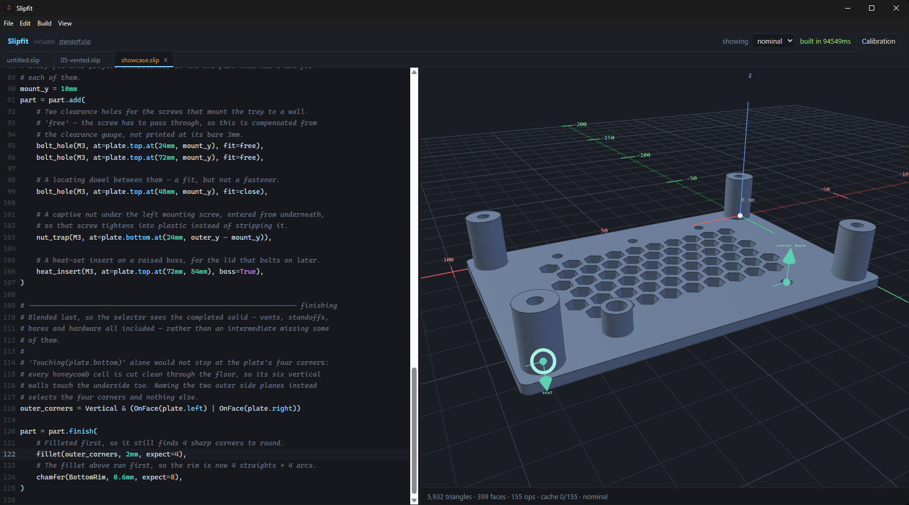
Slipfit is a CAD program where the model is a text file you write instead of a drawing you push around with a mouse. That sounds like the harder option, and for a decorative model it is. For a bracket with six bolt holes in it, it is the easier one — because the numbers in a functional part are all related to each other, and typing a relationship once beats re-dragging six holes every time the plate gets longer.
The second thing it does is the reason it exists. A printed hole never comes out the size you asked for: the nozzle lays plastic slightly inside the line, and the amount depends on your machine, your nozzle and your filament. Slipfit splits that problem in two. Your file records intent — this is an M3 bolt and it has to pass through. Your profile records what your printer actually does to a hole, measured once by printing a gauge and pushing real hardware into it. The millimeters get worked out when you export.
A model is a text file
Plain text, saved as .slip. You can read it, email it, and see exactly what changed
between two versions.
Small vocabulary
Five shapes, three ways to combine them, and a handful of words for hardware. That is nearly all of it.
One part per file
The file has to end up with something called part. That is the only name Slipfit looks
for.
Calibrate once
A few gauges, about 40 minutes of printing. Every part you make afterwards uses those numbers.
Do I need to know how to program?
No — not to start, and possibly not ever. Slipfit files are written in Python, but the first half of this page uses nothing except names Slipfit hands you, and every example is short enough to read out loud. A five-line file is a real Slipfit file and a real part you can print.
You can use Python later, when you want forty vents instead of one, or a bolt pattern that re-centers itself. At that point the whole language is sitting there — loops, functions, arithmetic — rather than a cut-down scripting dialect that runs out just as you get somewhere. Where this page uses one of those, it explains it.
What it does not do
Worth knowing up front so you do not go hunting. In this version there are no lofts, splines, draft angles or offsets. No constraint solver — a profile's dimensions are the code, not a drag. Most of a part is solid blocks added together and cut away — the way you would describe it to somebody over the phone — plus a 2D outline drawn once and swept, mirrored or patterned into the rounded, repeated and revolved shapes a block alone cannot make. One file produces one part, though it can be built out of several files.
If you want to model an organic shape, there are better tools for that. If you want a bracket, a mount, an enclosure lid or a jig, this is aimed squarely at you.
Start here
Install it
One file, double-click, done. Python and the CAD kernel are inside the installer; there is nothing else to set up and nothing else to install.
Windows · setup.exe
Slipfit-0.5.0-windows-x64-setup.exe — installs for you alone, no administrator prompt.
macOS
Not packaged yet — macOS support is coming in a future release.
The package sets up its own sandbox on install — a security wrapper that stops the app reaching parts of your machine it has no business in. You will not see it work; you would only have noticed it missing.
Windows
Double-click Slipfit-0.5.0-windows-x64-setup.exe. It installs into your own user
folder and never asks for administrator rights.
The installer is not code-signed — a certificate costs real money and this is a one-person project — so Windows shows “Windows protected your PC”. To continue, click More info, then Run anyway.
That warning is exactly the warning you should heed on a file from a stranger. Only click through it for software you actually meant to install, from a place you actually trust.
Antivirus (norton)I have tested the installation on a PC with Norton antivirus and a popup appeared saying they were checking my app and sending it to their threat team. It sounded scary but it passed their analysis and runs fine on that computer afterwards.
Linux
sudo apt install ./Slipfit-0.5.0-linux-x64.deb
Then launch Slipfit from your applications menu. Installing with
apt rather than dpkg -i is worth doing because it pulls in anything
missing instead of leaving the package half-configured.
The first time you open it
Two folders appear, and it is worth knowing which is which, because they do different jobs:
| Folder | Windows | Linux | Holds |
|---|---|---|---|
| Your models | Documents\Slipfit | ~/Documents/Slipfit | Your .slip files and the parts you export. Seeded once with a folder of examples to
open and pull apart. |
| Your workshop | %APPDATA%\Slipfit | ~/.config/Slipfit | Your calibration: what your printer does to a hole, and which heat-set inserts you own. |
They are separate on purpose. A calibration describes your printer, not one project, so it has to follow you into every folder you model in. Keeping it with the models would mean a part opened from your Downloads folder quietly exported uncompensated.
Start here
The window
Your file on the left, your part on the right, and a dropdown at the top that decides which printer you are using.
.slip. It rebuilds about a third of a second after you stop typing, and
straight away when you save.
viewportthe built part. Z is up and the grid is the bed, so “which way up” is never
ambiguous.
inspectoropens when you click a face. It tells you why that face is there.
footerhow big the build is, which printer the numbers came from, and a standing
♥ Support link.
Moving the camera
| Do this | Get that |
|---|---|
| Drag with the left button | Orbit |
| Shift + drag, or drag with the right button | Pan |
| Scroll wheel | Zoom |
| Click a ball on the corner gizmo | Look straight down that axis, flat. Below. |
| Click the gizmo's hub | Back to the ordinary view |
| Click a face | Open the inspector on it |
| ↑ ↓ in the inspector | Step through the chain |
| F | Frame the part |
| X | X-ray: draw the edges hidden inside the solid |
| A | Cycle how many anchors are drawn |
| S | Section: cut away to see inside. More, below. |
| M | Measure: pin dimensions onto the part, one after another. More, below. |
| Esc | Close the inspector or the calibration sheet |
The gizmo in the corner, for looking straight at something
Bottom-left of the viewport sits a little cluster of six colored balls on three spokes, with a
hub in the middle. Click a ball and the camera goes to that axis and looks straight down
it — down z for a top view of the bed, along x or y for a side. The balls are lettered
and filled on the positive side of each axis and hollow on the negative, so you can tell
+x from −x without having to know which color is which.
An axis view is drawn flat - no perspective - and the reason is worth explaining, in a flat view you can see exactly how things line up (or don't). Under normal perspective, parallel edges converge as they go away from you, so a hole that is square to an edge and a hole that is 2° off look the same. Flat, they do not: parallel stays parallel, and lined up becomes something you can see rather than something you hope. That is what makes “are these two faces in the same plane” answerable by eye. Click the hub to go back to the perspective view.
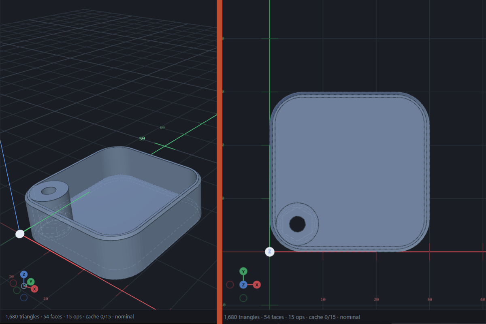
Half of all CAD programs move the camera with your mouse and half move the model, so one of them feels backwards to everybody. File ▸ Settings… (Ctrl/Cmd + ,) reverses orbit horizontally, orbit vertically, pan horizontally, pan vertically and the zoom wheel — five separate switches, because the usual complaint is about one axis and flipping all of them fixes the wrong thing.
The same sheet carries the theme picker — a handful of built-in themes including a light one,
with Duplicate to make one you can edit and export. docs/shell.md
has the detail.
The settings are stored in the application and don't move with your .slip files.
Three things the viewport shows that are not your part
| What you see | What it means |
|---|---|
A violet shape, with a 1 tool shown badge |
A shape you built but have not yet cut or fused with anything. Usually a cutter, written a line before the cut that consumes it. It disappears the moment it is used. |
A ghosted shape, with an amber 1 unused result badge |
A line that did something and then threw the answer away — the mistake everybody makes once. Explained below. |
| Small teal arrows on faces | Anchors: named places on the part. The arrow points the way the face looks, which is how
.placed() knows which way round to mate two parts.
|
A cycles the anchors between named (the ones somebody declared, the default), all (including the six every box has) and none. Clicking a face always shows that body's anchors regardless - this is helpful when debugging a shape that landed somewhere unexpected.
The editor helps as you type
Start typing and a list appears with what fits: Slipfit's own vocabulary, Python's
keywords, and the unit suffixes. The suffix list only opens where a suffix can actually go —
directly after a number, with nothing in between — so range(10 does not sprout a
popup, and after 1/4 you are offered in as inches rather than
as the Python keyword. It is entirely local: nothing is fetched, nothing is indexed, nothing
leaves your machine. Once a list of options appear you can use up or down arrows to select one
and enter to accept you selection.
Menu commands worth knowing
| Command | Shortcut | What it does |
|---|---|---|
| File ▸ Open | Ctrl/Cmd + O | Opens a .slip in a new tab. Does not run it — see below. |
| File ▸ Save | Ctrl/Cmd + S | Saves and rebuilds. |
| File ▸ Export | Ctrl/Cmd + E | Writes the part to a file you can slice. Three formats. |
| File ▸ Settings… | Ctrl/Cmd + , | Which way the mouse turns the camera, and the editor/viewport theme. |
| Build ▸ Rebuild | Ctrl/Cmd + B | Builds again without editing anything. |
| Build ▸ Cancel build | Ctrl/Cmd + . | Stops a build that is taking too long. A file with an endless loop in it cannot be stopped any other way. |
| Build ▸ Restore last good build | Ctrl/Cmd + Shift + R | Puts back the last text that built cleanly. Survives closing the app. |
| Build ▸ Calibration… | Ctrl/Cmd + K | Opens the calibration sheet. |
| View ▸ X-ray | X | Shows edges hidden inside the solid — the quickest way to tell whether a hole actually got cut.
Like F (frame the part) and A (cycle the anchors), it is a bare letter, so
it acts on the 3D view only when you are not typing in the editor. |
| Help ▸ Documentation… | — | Opens this guide in your browser. |
| Help ▸ Support Slipfit… | — | Slipfit is free and complete; this is the one place that asks. No prompt, no reminder — a menu item and nothing else. |
Working on several files at once
Files open in tabs above the editor, and the active tab is the one the one with the underline and the one the 3D view is showing. Each tab keeps its own text, its own undo history and its own last successful build, so switching back to something you were looking at five minutes ago is instant rather than a rebuild. This is what makes a part built from several files workable: click into the library, fix the standoff, click back, and the model that uses it has already rebuilt.
Four states, and how to tell them apart
| State | How it looks |
|---|---|
| Built | The part, in solid surface color. |
| Failed, nothing built | An error panel under the editor, the failing text underlined, and an empty viewport. |
| Failed, partly built | An amber, hatched part with a badge naming which half-finished stage you are
looking at — partial — cut(bore) as of bracket.slip:10 — plus the inputs that failed
lit in red. |
| The build process crashed | An error panel naming the operation, and an offer to restore the last good build. |
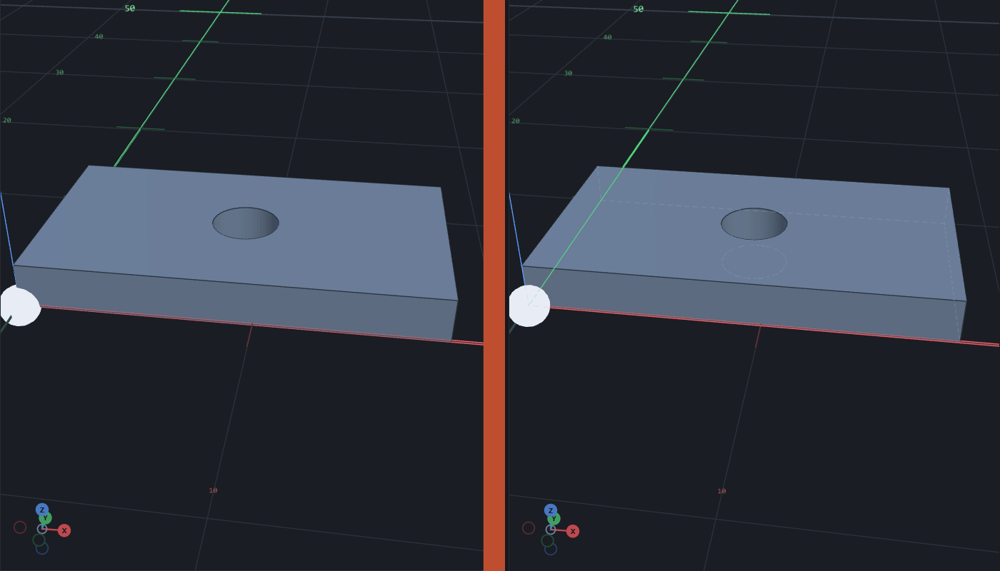
Amber and hatched means the build stopped partway and you are looking at an intermediate stage, not your model. It gets three separate signals — the color, a wireframe shell over it and a text badge — precisely so it cannot be mistaken for a finished part.
Start here
Opening a file is not running it
Read this bit even if you skip the rest. A .slip file is a program, and running
one you
did not write carries the same risk as running any other program from a stranger.
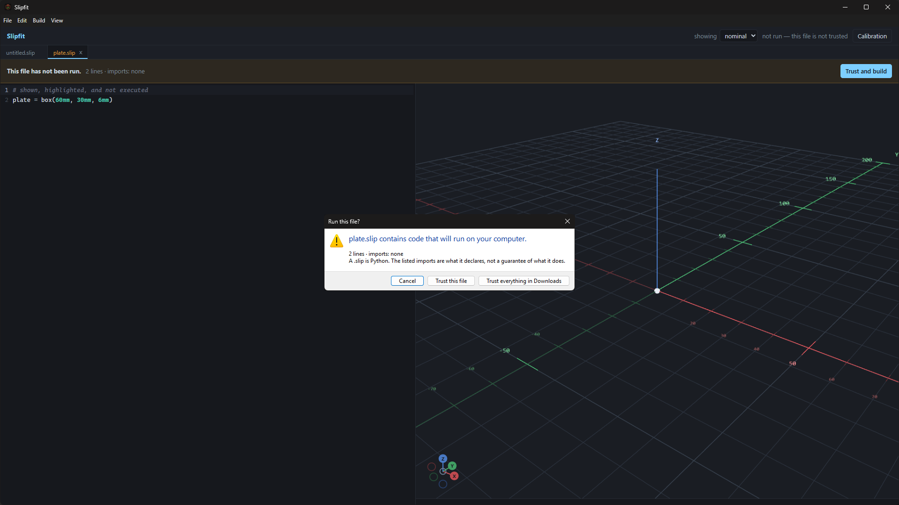
Open a file Slipfit has not seen before and it is read, shown and color-coded — and not built. The banner across the top is the only route from “I can read this” to “this may run”. Nothing has executed while you sit there looking at it.
The banner counts the lines and lists what the file pulls in, worked out by reading the text
rather than by running it. Treat that as a disclosure, not a verdict: a file that imports
nothing but math can still reach your files.
| You trust | Recorded as | It lapses when |
|---|---|---|
| A single file | Its path, and a fingerprint of the exact contents you approved | The contents change — including a re-download over a file you approved last week |
| A whole folder | The folder | Never. Your own project is somewhere you edit constantly. |
A .slip downloaded from a maker forum can read your files and send them
somewhere, and nothing about the resulting geometry would look wrong. There is no sandbox
around a model, and a custom file extension does not imply one. Read a shared
file before you trust it. It is plain text, and that is half the point of plain text.
Including one file from another runs it too, so the prompt lists every file that will execute, not just the one you clicked.
A .slip runs; a STEP file used or a font is
parsed. The banner lists both, under headings that say which is which, but only the
code gets the warning. Step files and fonts do not run code.
Start here
Your first part
A plate with a hole through it. Three lines, and every single word in them explained.
-
Make a file
When you open Slipfit the editor will be blank with a tab called
untitled.slip. Click into the window... -
Type this
part = box(40mm, 20mm, 3mm).cut( hole(5mm, 3mm, at=(20mm, 10mm, 3mm)) ) -
Save it
As you type the in the editor and pause, Slipfit will try to build the model and show it to you. You can save the file by hitting Ctrl/Cmd + S or using the file menu. If done correctly the part appears in the viewport, if not error messages will help guide you in correcting the errors.
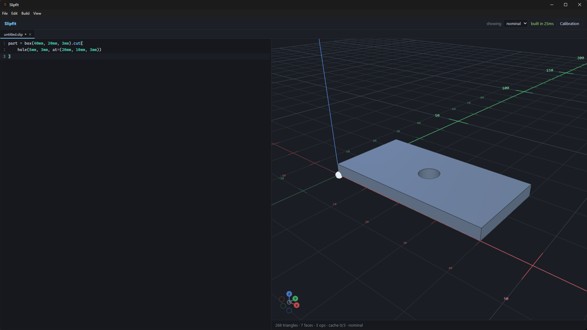
part.Reading that out loud
Read it as one sentence: “take a block 40mm by 20mm by 3mm, cut a 5mm hole 3mm deep into it at
(20mm, 10mm, 3mm), and call the result part.” Every piece of it:
- part =
- The one name Slipfit looks for when your file finishes. Whatever
partends up meaning is what you see and what you export. Everything else you name is your own business. - box(40mm, 20mm, 3mm)
- A rectangular block, 40 long, 20 wide and 3 thick. The brackets hold the three sizes, separated by commas — the same way you would say “forty by twenty by three”. Their order can be read as X, Y, Z
- .cut(…)
- The full stop (period) means “and then do this to it”.
.cuttakes a second shape away from the first, the way a drill takes material out of a plate. - hole(5mm, 3mm, …)
- The shape being taken away: a 5mm-wide hole, 3mm deep, pointing down into the material.
- at=(20mm, 10mm, 3mm)
- Where to put it.
atis the name of the setting and everything after the=is its value — 20 along, 10 across, at the top surface. That is halfway in both directions on a 40mm x 20mm plate.
The indented middle line and the closing bracket on its own are just breathing room. You could write the whole thing on one line; it would mean exactly the same. Slipfit DOES care about indentation later on, in loops and functions, and this page says so when it gets there.
Hardware is sold by diameter, holes are drilled by diameter, and calipers read diameter — so
Slipfit never asks you for a radius. hole(5mm, …) is five millimeters across.
Now make it adjustable
Give the numbers names and the part becomes something you can change in one place. This is the entire reason to model in text:
length = 40mm
width = 20mm
thickness = 3mm
bore = 5mm
plate = box(length, width, thickness)
part = plate.cut(hole(bore, thickness, at=plate.top.at(length / 2, width / 2)))
The first four lines each say “from now on, this word means this number”. After that
you can write length anywhere you would have written 40mm, and you can
do arithmetic with it — length / 2 is twenty.
That last line is the payoff. plate.top.at(length / 2, width / 2) means “on the
plate's top face, halfway along and halfway across”. Change length to
60mm and the hole stays centered, because its position was worked out
rather than typed. In a mouse-driven program you would have dragged the hole. That thing after
the dot is called an anchor, and it is covered properly below.
Every save or pause in typing rebuilds and redraws almost instantly, so a shape in the wrong place is something you see rather than something you calculate. Put it roughly where you think it goes, look, adjust. That loop is the whole workflow.
Writing a .slip
Numbers carry units
This is the one thing Slipfit adds on top of ordinary Python, and the one thing that will surprise you first.
6.35mm is a value in its own right. You can add it, multiply it, compare it, store
it in a list. What you cannot do is mix it with a bare number, because that is exactly the
mistake units exist to catch:
wall = 2mm
outer = wall * 2 # fine — a length times a plain number is a length
ratio = 10mm / 2mm # fine — gives 5.0, a plain number
gap = 3mm + 1 # error: cannot add Length and ScalarThat last line is refused rather than guessed at. One millimeter and one inch and one thou are all “1”, and a program that picks for you picks wrong eventually.
There is no exception for zero, either. 3mm > 0 is an error and
3mm > 0mm is fine — letting 0 count as an honorary length is the
crack everything else leaks through.
What multiplying two lengths gives you
Slipfit keeps track of five kinds of quantity: a plain number, a length, an area, a volume and an angle. Multiplying and dividing moves between them, exactly as it does on paper:
10mm * 4mm # an area, 40mm2
10mm * 4mm * 2mm # a volume
20mm / 4mm # 5.0 — the units cancel, so it is a plain number
sqrt(40mm2) # back to a length
sin(45deg) # 0.707… — angles are a kind too, so rotate(90) cannot be wrong
Combinations with no physical meaning are refused instead of invented. There is no such thing as
a length times an angle, and no “one over a length”, which is why 1 / 4in fails —
see the next bit.
Fractions, for imperial hardware
wall = 1/4in # 6.35mm
rod = 3/8in # 9.525mm
Write these with no spaces at all. 1 / 4in is read as a division
and fails loudly. Mixed numbers like 3-1/2in are not supported — they collide with
subtraction — so write 3.5in or 7/2in.
Every suffix there is
Fourteen of them, and no way to add more. Stick them straight onto the number with no space.
| Kind | Suffixes | Kept as | Shown as |
|---|---|---|---|
| Length | mm cm m in |
mm | mm, to 0.01 |
| Area | mm2 cm2 m2 in2 |
mm² | mm², to 0.01 |
| Volume | mm3 cm3 m3 in3 |
mm³ | mm³, to 0.01 |
| Angle | deg rad |
radians | degrees, to 0.1 |
3/8in is really 9.524999999999999mm and stays that way all the way
to the printed part. Only the number on screen is rounded to 9.52mm. Never compare
against the figure you read off the display.
The one place Slipfit differs from Python
2in is two inches. Written with a space, 2 in items is still an
ordinary Python “is it in this list” test — the suffix has to be touching its number. That is
the only construct anywhere where a valid Python program means something else as a
.slip, and Python already warns about it.
Writing a .slip
Shapes, and where they go
Five shapes. Everything else is those five, combined — and the work is less in the shapes than in saying where each one goes.
Most of a part is solid blocks, cylinders and cones, added onto one another and taken away from one another. If you can describe the part out loud — "a 60 by 30 plate, 6 thick, with a ⌀3 hole 10 in from each end" — you have already said most of the file. For the rest — a rounded edge, a tapered rib, anything a block alone cannot describe — you draw a profile instead: a 2D outline, in code, that becomes a solid by being extruded or revolved.
Which one do I want?
| What you are making | Reach for |
|---|---|
| A plate, a wall, a base, a square boss — or a slot to cut with | box |
| A pillar, a standoff, a shaft, a round boss | cylinder |
| A countersink, a lead-in, a spike | cone |
| A pocket for a nut, a hex socket | hex_prism |
| Anything you are drilling into a surface | hole |
Written out in full:
| Call | What you get |
|---|---|
box(x, y, z) |
A rectangular block, square to the world, its lowest corner at at. |
cylinder(diameter, height) |
Standing on at, running along axis. |
cone(diameter, top_diameter, height) |
A cone with its point cut off. A top of zero gives a real point. |
hex_prism(across_flats, height) |
A hexagonal post, sized across the flats — the way every nut is specified. |
hole(diameter, depth) |
A cylinder aimed into the material, for cutting with. |
box(40mm, 20mm, 3mm) # 6 faces, 12 edges, 2400mm3
cylinder(10mm, 20mm) # ⌀10 across, 1570.8mm3
cone(10mm, 4mm, 6mm) # tapers 10 down to 4, 245.04mm3
hex_prism(5.5mm, 3mm) # 5.5 across the flats = 6.35 across the corners
cylinder(6mm, 30mm, axis=(1, 0, 0)) # lying down, running along Xcylinder(10mm, …) is ten across, not ten in radius.
hex_prism(5.5mm, …) is 5.5 across the flats — the number
stamped in the nut standard, and the number your calipers read across a nut's two parallel
faces. The across-the-corners size the pocket actually needs to be, 6.35mm for that nut, is
worked out for you. Asking you for the number nobody has is how a conversion gets done twice and
disagrees with itself.
Where a shape lands if you say nothing
Slipfit's world has three directions. x runs to the right, y runs away from you, and z runs up — and up is the direction the printer builds, which is why z is the one that keeps mattering later. All three meet at a point called the origin.
Nothing is centered on the origin. A box puts its lowest corner there and grows
away from it in all three directions, so box(40mm, 20mm, 6mm) fills x 0 → 40,
y 0 → 20 and z 0 → 6. A cylinder, a cone and a hex prism stand on the origin, centered
about it, and grow upward.
at=. The dashed lines are the three edges you cannot
see from here.Giving a shape a name
plate = box(40mm, 20mm, 6mm)
Read the = as “from now on, plate means this box”. It is
worth doing for anything you will refer back to, because a name is how you say on the
plate's top face, 10 in from the corner — which is how nearly every position in a real
model ends up being written. The names are yours to choose; only part means
anything to Slipfit.
Three settings every shape takes
| Setting | Takes | If you leave it out | Works on |
|---|---|---|---|
at= |
Three lengths, an anchor, or a spot on a face | The origin | all five |
axis= |
A direction, as three plain numbers — e.g. (1, 0, 0) |
Straight up | all but box |
label= |
Some words, for what the inspector calls this step | A description of the call | all five |
These are written name=value, and that pattern turns up everywhere in Slipfit. You
can give them in any order and leave any of them out, so
cylinder(6mm, 30mm, axis=(1, 0, 0)) and
cylinder(6mm, 30mm, label="post", axis=(1, 0, 0)) are the same cylinder, one just
has a label and the other one does not.
at= — three ways to say where
| Written as | Means | Use it when |
|---|---|---|
at=(20mm, 10mm, 3mm) |
That exact point in space. | You genuinely know the coordinate. |
at=plate.top.at(10mm, 5mm) |
On the plate's top face, 10 in from a corner of it and 5 across. | Almost always — see anchors. |
at=plate.mount |
At a spot you named yourself, earlier. | Several things share one place. |
The second and third are a habit worth forming. Make the plate 60mm long instead of 40 and
plate.top.at(10mm, 5mm) is still 10 in from the corner, while
(20mm, 10mm, 3mm) is now somewhere random on a different part.
axis= — which way the shape runs
axis= is the direction a shape grows along, not a rotation. A box has no growing
direction — it is three edge lengths — so it does not take one, and
box(40mm, 20mm, 3mm, axis=(1, 0, 0)) is an error rather than a tilted box. To turn
a finished shape, see Turning a shape below.
| Written | Points |
|---|---|
(0, 0, 1) |
Straight up. The default, so you rarely write it. |
(0, 0, -1) |
Straight down — into a part you are cutting from above. |
(1, 0, 0) |
Along x, lying down. (0, 1, 0) is along y. |
(1, 1, 0) |
Diagonally, at 45° between x and y. Any direction is allowed. |
Those three numbers are a direction, not a distance, which is why they carry no units
and why (0, 0, 2) means exactly what (0, 0, 1) means. How long the
shape is is the length you gave it.
Most of the time a shape should be built where it belongs, using at= and
axis=, rather than built at the origin and then moved. If you want the same
feature in four places, build it four times — the examples show how a
loop makes that one line.
When that is not enough — a box at an angle, or a part from another file that arrives at the
origin — .rotated(), .moved() and .placed() exist, under
Using another file. A reflection is its own
operation, not one of these three.
Turning a shape
plate = box(40mm, 20mm, 3mm)
# about= takes an anchor, a position, or a bare direction
turned = plate.rotated(45deg, about=plate.bottom) # 42.43 x 42.43 footprint
upright = plate.rotated(90deg, about=(1, 0, 0)) # tipped onto its edge
Turning is rigid: nothing stretches, the volume is unchanged, and every anchor turns with the
shape — so turned.top still means the top. Note that hex_prism also
takes a rotation= of its own, which spins the hexagon about its own axis as it is
built. That is a different thing from turning a finished solid.
Why hole() exists when cylinder() would do
A cylinder built at a point runs up from it. A hole runs down into the surface
— which is the direction a drill actually goes. Given a spot on a face, hole() aims
into the material, so it cuts:
plate = box(40mm, 20mm, 3mm)
plate = plate.cut(hole(3mm, 5mm, at=plate.top.at(10mm, 10mm))) # cuts through
plate = plate.cut(cylinder(3mm, 5mm, at=plate.top.at(10mm, 10mm))) # removes nothing at all
That last line is not an error. It builds a ⌀3 post standing on top of the plate, subtracts it
from thin air, and hands the plate straight back — which is why hole() is the one
to reach for by reflex. For anything else you are cutting with — a hex prism, a box, a cone for
a countersink — aim it yourself with axis=(0, 0, -1).
Depth is measured from wherever you put it, and overshooting costs nothing. On a 3mm plate,
hole(3mm, 3mm, …) and hole(3mm, 10mm, …) both give the same clean
through-hole — so when you mean “all the way through”, saying the thickness or more is simpler
than being exact.
Writing a .slip
Anchors
A named place on a shape, so you can say “on the top face, 10 in from the corner” instead of working out a coordinate.
Every box has six: top, bottom, left,
right, front, back. A cylinder and a cone have
top and bottom. Adding .at(across, along) gives you a
point on that face:
plate = box(40mm, 20mm, 3mm)
plate.top.at(10mm, 5mm) # the point (10, 5, 3)Both numbers measure inwards across that face, from a corner of that face:
| Anchor | .at(10mm, 5mm) lands at |
The second number runs across |
|---|---|---|
top |
(10, 5, 3) | the 20mm width |
bottom |
(10, 15, 0) | the 20mm width |
left right front back |
off the part | the 3mm thickness |
On a 3mm plate, plate.left.at(10mm, 1mm) is on the material and
plate.left.at(10mm, 5mm) is 2mm below it, in mid-air. This is the single most
common cause of a hole that came out nowhere near the part.
A cylinder anchors on its center line, because a round face has no corner to
measure from. cyl.top.at(0mm, 0mm) is the middle of the far end.
An anchor is a plane, not a face
This starts to matter once you cut things. A cut can split one top face into three, and a reference to “that face” would either go stale or quietly come to mean one third of it. An anchor goes on meaning the flat plane it always meant. If the material at an anchor has been cut away entirely, selecting faces there matches nothing — and says so, rather than pointing at empty space.
Naming your own
plate = plate.with_anchor("mount", plate.top.at(10mm, 5mm))
plate.mount # the point (10, 5, 3), by name, from now onGet the name wrong and it tells you what does exist:
AnchorError: box(40mm, 20mm, 3mm) has no anchor named 'topp'
= anchors on this solid: back, bottom, front, left, right, topCycling how many are drawn
Anchors show in the viewport as small teal arrows, the arrow pointing the way the face looks — and a part with several named gets busy fast. Press A to cycle what is drawn: named anchors only (the default), all of them including the six every box starts with, and none. Clicking a face always shows that body's anchors regardless of which state you are in — that is a reply to the click, not part of the cycle.
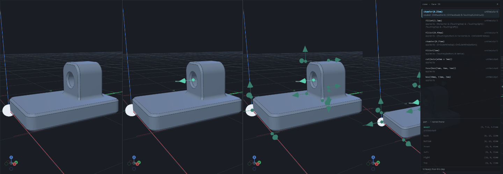
Writing a .slip
Profiles, extrude and revolve
A 2D outline, drawn in the plane of an anchor, that becomes a solid by being swept. For the rounded edge, the tapered rib and the lathe-turned foot the five primitives cannot describe.
A profile is a closed outline you draw a run at a time — a straight line or an
arc, each ending where the next begins — until you close it back to where it started. On its own
it is flat and builds nothing; .extruded() pushes it into a solid along a straight
line, and .revolved() spins it around a line to make one.
outline = (
profile(on=plate.top)
.line_to(40mm, 0mm)
.arc_to(48mm, 8mm, radius=8mm, label="nose radius")
.line_to(48mm, 30mm)
.line_to(0mm, 30mm)
.close()
)
rib = outline.extruded(6mm) # 1426.27mm2 of outline, 8557.59mm3, 7 facesReading that out loud
- profile(on=plate.top)
- Start drawing, in the plate's top face — the same
(u, v)frameplate.top.at(10mm, 15mm)already uses. Nothing about position or facing needs saying twice. - .line_to(40mm, 0mm)
- A straight run from wherever the pen currently is to that point.
- .arc_to(48mm, 8mm, radius=8mm)
- A curved run to that point, bowing by the radius given. It is always the shorter way round — why, below.
- .close()
- Draws the run back to the start and hands back a finished
Profile. Nothing about a profile can be built before this runs. - .extruded(6mm)
- Pushes the flat outline 6mm along the anchor's own normal, into a solid.
Every number is in the plate's own frame — the same one anchors already
use — so the outline moves with the plate exactly as an anchor does, and 48mm can be
plate_width - 2 * wall if that is what it means.
Other CAD programs put a solver behind a sketch because the sketch is dragged with a mouse,
and the solver is what stops a drag from destroying the design. Here the code already is the
constraint system — a name, an expression, a dimension that refuses 3mm + 3 — so a
second, numerical source of truth about the same shape would only get in the way of the one
already answering "why is this here?"
The radius is a direction, not just a size
radius=8mm puts the arc's center to the left of travel;
-8mm puts it to the right. A path turns toward its center, so
positive is a left turn — and an outline drawn counter-clockwise, the usual way, turns left at
every convex corner, which is why the unsigned, common case is the one you write with no
ceremony. An arc is always the minor one: past a half turn, draw it as two arcs,
because a radius that silently picked between a 30° corner and a 330° loop would be
a wrong answer with nothing on screen to contradict it.
What a bad outline tells you
Every one of these is refused at the call that made it wrong, not at .extruded()
three lines later:
ProfileError: line_to(0mm, 0mm) does not move — it ends where it starts, (0.00, 0.00)
= a segment of zero length has no wall to sweep
ProfileError: arc_to() radius 2mm cannot reach (48.00, 8.00) from (40.00, 0.00)
= those points are 11.314mm apart, so the radius must be at least 5.657mm
ProfileError: a profile needs at least three straight runs, and this one closes with 2
= two straight runs enclose no area, so there is nothing to sweep
ProfileError: the profile crosses itself at (20.00, 10.00)
= line_to(40mm, 0mm) (panel.slip:4) crosses line_to(40mm, 20mm) (panel.slip:6)
The three-run floor is about straight runs specifically, not a rule about sides — a round pocket
is two half-turn arcs and nothing more. And which way round you drew it never matters: an outer
boundary is treated as counter-clockwise and a hole as clockwise regardless of which way your
line_to and arc_to calls actually ran, because a "hole" that silently
added area would be a worse surprise than being turned around for you.
Watching it while you draw it
An outline you have not swept yet is not invisible while you work on it: it draws in the
viewport in violet, as its boundary loops, the moment .close() completes — the same
treatment an unused cutting tool gets elsewhere on this page. Click it and
the inspector lists its runs in the order you drew them, each against the line that drew it. The
moment something sweeps it, it disappears, exactly as a cutting tool disappears into the boolean
that consumes it.
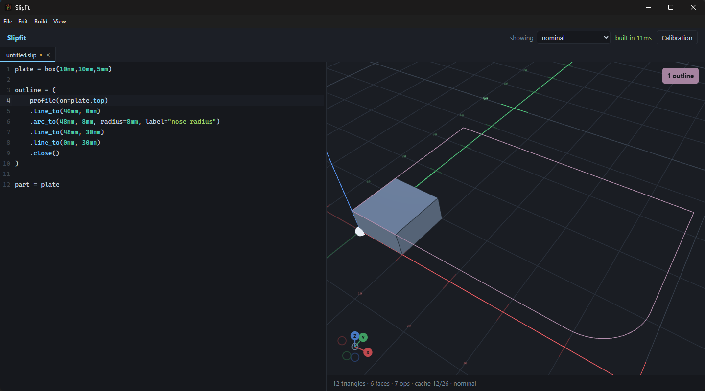
Extrude and revolve
outline.extruded(6mm) # straight up, along the anchor's normal
outline.extruded(-3mm) # the other way — a cutting tool
section.revolved(about=plate.top.u) # a full turn
section.revolved(90deg, about=plate.top.u) # a quarter of one
Extrude has no direction to give it — an outline drawn on plate.top
extrudes upward and one drawn on plate.bottom extrudes downward, because the anchor
already knows which way it faces. A negative height reverses it, which is what an extruded
pocket-cutting tool wants. The result is an ordinary solid with two anchors of its own:
top, on the cap the sweep traveled to, still in the coordinates the outline was
drawn in; and bottom, on the outline's own plane.
Revolving about a line
A revolve turns an outline about a line, and an anchor is a plane — so
rather than a new syntax for lines, the two an anchor already has are offered by name:
plate.top.u and plate.top.v run through its origin, and
plate.top.at(20mm, 0mm).u_axis is the same direction through a point on it.
section = ( # 10 long, 5..15 out from the axis
profile(on=plate.top.at(0mm, 5mm))
.line_to(10mm, 5mm).line_to(10mm, 15mm).line_to(0mm, 15mm).close()
)
section.revolved(about=plate.top.u) # 6283.19mm3, 4 faces
section.revolved(90deg, about=plate.top.u) # 1570.80mm3, 6 faces
A partial turn leaves two flat faces where it started and stopped, and gets start
and end anchors on them. A full turn has no such faces, and gets neither — a frame
describing a face that is not there is exactly what anchors are built to avoid.
Turning about a line that does not lie in the outline's own plane, or an outline that straddles the axis it is turning about, both build something in raw OCCT — quietly the wrong thing in the first case, a solid passing through itself in the second. Slipfit checks both before the turn happens:
KernelError: front.u is not in the plane profile(on=top) was drawn on
= it passes 3.000mm off top; a revolve turns an outline about a line lying in its own plane
KernelError: straddler lies on both sides of top.u
= far side (knob.slip:5) is on one side and line_to(10mm, -5mm) (knob.slip:4) on the
other, so the turn would sweep the solid through itselfWhich line drew this wall
Every side face of a swept solid resolves in the inspector to the exact line_to or
arc_to that drew it, not just to the extrude or revolve that swept it:
click the curved side wall
▸ extrude(6mm) panel.slip:19 created
nose radius panel.slip:16 from segment
profile(on=top) panel.slip:15 applied to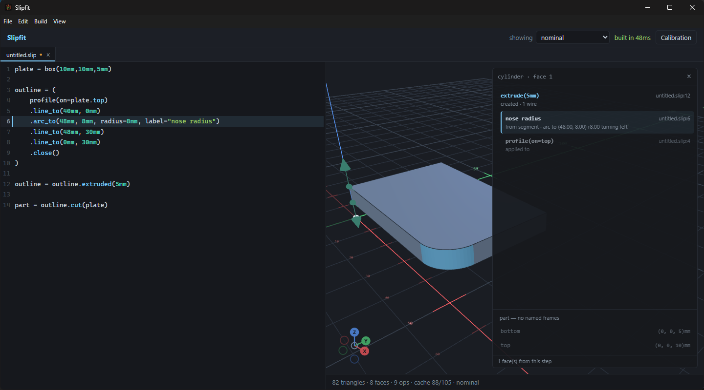
That is also usable as a selector, which is the point of labeling a run in the first place — there is no way to ask the geometry for "the wall the nose radius made" the way you can ask for "every round face", because a part can easily have more than one round wall:
| Selector | Matches |
|---|---|
Swept |
Every wall a profile drew — the whole side set, never the caps. |
FromSegment("nose radius") |
Only the wall swept from the run with that label. |
rib.faces(Swept) # 5 walls; the 2 caps are not
rib.faces(FromSegment("nose radius"), expect=1)
rib.finish(chamfer(Circular & OnFace(FromSegment("nose radius")), 0.5mm))
A label that names nothing matches nothing, and expect= —
already the rule everywhere else — is how that shows up as an error instead
of a silent no-op.
Writing a .slip
Combining shapes
Three operations, one rule about the equals sign, and one habit worth forming early.
| Written | Does | At the bench this is |
|---|---|---|
solid.cut(tool) |
Removes the tool's shape from the solid. | Drilling, milling a pocket, sawing a slot. |
solid.fuse(tool) |
Adds the tool on, welded into one body. | Gluing a boss on, welding a rib. |
solid.intersect(tool) |
Keeps only the bit where the two overlap. | Trimming a shape back to an outline. |
The thing you cut with is an ordinary solid — a cylinder, a box, a hex prism. There is no special kind of cutting tool: a shape is a tool because of what you did with it, and that same cylinder could just as easily have been fused on. This is why one small vocabulary of shapes goes as far as it does.
None of these change the solid you call them on. They hand you back a new one, and if you do not catch it in a name, nothing happens:
part.cut(hole(3mm, 6mm, at=plate.top.at(10mm, 10mm))) # does nothing
part = part.cut(hole(3mm, 6mm, at=plate.top.at(10mm, 10mm))) # drills the holeThe hole was made, and then thrown away. The viewport does say so —
the discarded result is ghosted, with an amber 1 unused result badge and the line
underlined in the editor — but the build still succeeds, which is exactly why it catches people.
If an edit has no visible effect on your part, check this first. The same goes for
.fuse(), .finish() and .add().
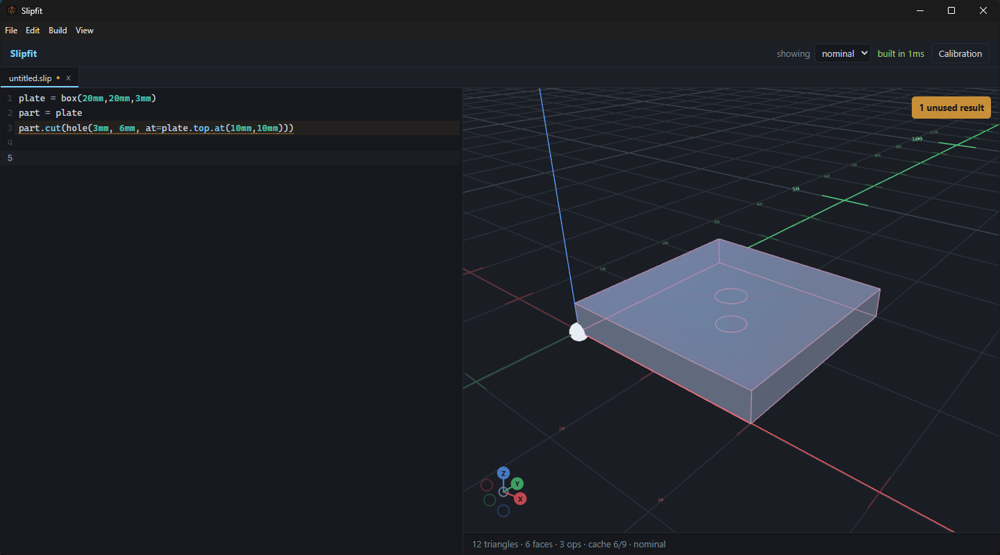
Getting a new solid back every time is not an inconvenience to work around; it is what lets
plate go on meaning the plain rectangle you started with, however much you cut out
of part afterwards.
Building a part up a step at a time
Most files have the same shape. Make the stock and give it a name, then reassign
part once per operation, so each line reads as one thing you did, in the order you
did it:
plate = box(60mm, 30mm, 6mm) # the stock, kept under its own name
part = plate
part = part.cut(hole(4mm, 6mm, at=plate.top.at(10mm, 15mm)))
part = part.cut(hole(4mm, 6mm, at=plate.top.at(50mm, 15mm)))
part = part.fuse(cylinder(10mm, 8mm, at=plate.top.at(30mm, 15mm)))
Every position there is measured from plate, not from part. Both
would work, but plate is the one that never moves — it stays the plain rectangle no
matter what happens to part — so it is the reliable thing to measure from, in the
same way you would measure from the edge of the stock rather than from the last hole you
drilled.
Cut with a shape that misses the material and you get the part back unchanged. Two causes account for almost all of it:
- It was aimed the wrong way. A
cylinder()built on a top face runs up, away from the material.hole()runs down into it, and anything else needsaxis=(0, 0, -1). - It started off the part. A pocket placed from
plate.left.at(…)lands in mid-air if the second number is bigger than the plate is thick, because a side face is only as tall as the material.
The tell is a part that looks right but has no hole in it. Press X for X-ray to see edges hidden inside the solid — the quickest way to find out whether the cut happened at all.
Cut forty holes with one operation
Cutting forty holes one at a time means forty operations against a part that gets more complicated each time. Build the forty cutters into a single tool first and it is one:
cutter = None
for u, v in positions:
cell = hex_prism(5mm, 3mm, at=plate.top.at(u, v), axis=(0, 0, -1))
cutter = cell if cutter is None else cutter.fuse(cell)
part = plate.cut(cutter)The result is identical either way; what changes is how long a rebuild takes, and you feel it the moment a part has a vent field or a honeycomb in it. The enclosure lid example does exactly this. A pattern, next but one, is the built-in version of that same loop — worth reaching for once the inspector, not just the rebuild, starts to matter.
intersect, for trimming to an outline
The one people reach for least. It keeps only what lies inside both shapes, which is how you cut a rectangle down to a round outline without having to describe the round outline as a boundary:
stock = box(40mm, 40mm, 3mm)
part = stock.intersect(cylinder(40mm, 3mm, at=(20mm, 20mm, 0mm))) # a ⌀40 discWriting a .slip
Mirror and patterns
Three ways to say "and another one of those" — a reflection, a row, and a ring — each
handing back an ordinary tool for cut, fuse or intersect to
take from there.
Mirror
pair = arm.fuse(arm.mirrored(about=arm.left)) # 4084.38mm3, 12 faces
about= takes an anchor — an anchor already is a plane, so a mirror needs
no new kind of value — or a point on one, for a plane offset from a face rather than through it.
It hands back the copy rather than fusing it for you. A mirrored
that fused itself would be two operations wearing one name, and half the time the copy is not
what you actually want fused — a left-hand version of a part, or a tool mirrored before it cuts,
never touches the original at all.
u and re-derives v
A right-handed frame cannot survive a reflection with all three of its axes intact, so a
mirrored anchor keeps u, flips the normal, and works v out from the
two. The reading that holds on both sides is both coordinates run inward from that face's
own near corner — which is the same trade a box's bottom already makes
against its top (anchors). It is the one thing about a
mirrored copy worth knowing before it surprises you:
arm.top.at(6mm, 6mm) # (6, 6, 6)
copy.top.at(6mm, 6mm) # (-6, -6, 6), not (-6, 6, 6)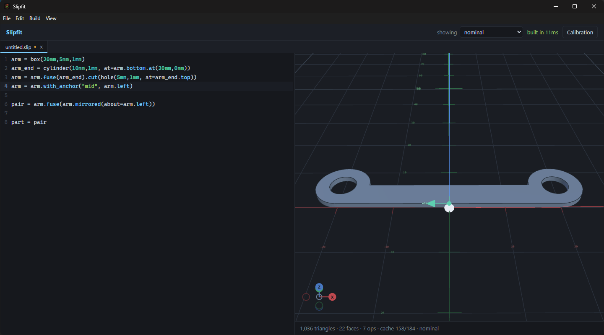
Patterns
vents = pattern(vent, count=4, spacing=15mm, along=plate.top.u)
ring = polar_pattern(slot, count=6, about=hub.top.axis)
part = plate.cut(vents)
The first copy is the tool exactly where you already built it, so count=4 means the
tool plus three more — a negative spacing runs the row the other way along the
axis, and a grid is two patterns, one along each direction. A polar pattern divides a full turn
by the count; there is no way to spread six copies over 90° instead of a whole revolution,
because "over 90°" has two defensible readings — spread across the angle, or stepped by it — and
a syntax that could mean either is exactly the wrong-but-confident failure this tool is built to
refuse. A loop is how you write that until the argument that would settle it exists.
along and about take an Axis — the line type
extrude and revolve already introduced. A frame offers three lines
through its origin: .u and .v, which a revolve turns an outline about,
and now .axis, running along the face's own normal, which is what a ring of copies
turns about. plate.top.at(30mm, 20mm).axis is the same normal through a point on
the plane, alongside the .u_axis from before.
A pattern hands back the copies as one tool, with no anchors — every frame the
original declared now exists count times over, and there is no single answer to
which one. That is exactly the shape cut, fuse and intersect
already expect, so nothing new is needed to use the result.
A shape whose parts overlap is not a valid argument to a boolean, and OCCT will not tell you
so: a ring of copies turned about its own tool's centerline, every copy landing on the last,
fused straight into a plate gave a solid of zero volume and reported success.
Overlapping copies are an ordinary thing to want, so pattern and
polar_pattern fuse their own copies before handing the tool over. Copies that
merely touch keep their own faces — a plain fuse merges no coplanar faces — and copies that
coincide collapse into faces belonging to all of them rather than none.
What a bad pattern tells you
KernelError: pattern() count must be at least 1, got 0
= a pattern of no copies is not a pattern of nothing, it is nothing
KernelError: pattern() spacing must not be zero, got 0mm
= every copy would land on the one before it
KernelError: polar_pattern(about=…) needs an axis, not Anchor
= pass a line to turn the copies about, such as hub.top.axis or plate.top.at(30mm, 20mm).axisWhy reach for one when a loop already works
A pattern builds nothing a for loop cannot — every shape it makes, a loop
already makes too. What it changes is the inspector, and that is the entire argument for using
one. Four looped cuts are four operations on four lines, and identical operations are
deliberately never collapsed into one, so clicking the third hole in a looped vent field gives a
chain that names the third cut and tells you nothing you did not already know. A pattern gives
one entry, with the copy's index underneath it:
click the third hole
▸ cut(pattern(4 × 15mm)) plate.slip:13 modified
pattern(4 × 15mm) plate.slip:12 modified
copy 3 of 4
vent plate.slip:11 created
plate plate.slip:10 applied toThat index rides on the face the pattern produced, not on the operation, which is what lets it survive the boolean that consumes the tool — the chain above is read off the finished part, not off the pattern by itself.
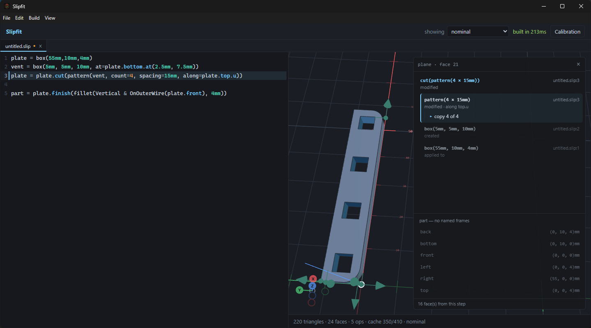
Writing a .slip
Lettering
A part number on a bracket, a size on a lid, an arrow on a housing. A letter is a profile,
like any other — this is .extruded() and a boolean you already know, with a font doing the
drawing for you.
label = text("SLIPFIT M3", height=5mm, on=plate.top.at(6mm, 4mm))
sunk = plate.cut(label.extruded(-0.6mm)) # 10737.28mm3, 116 faces
raised = plate.fuse(label.extruded(0.6mm)) # 10862.72mm3, 116 faces
Debossing is a cut, embossing is a fuse, and there is no third thing to learn. text()
adds nothing new to the kernel — a glyph is an outline in the anchor's own frame exactly like a
hand-drawn profile, so everything that section already said about
extrude, revolve and provenance applies to a letter too.
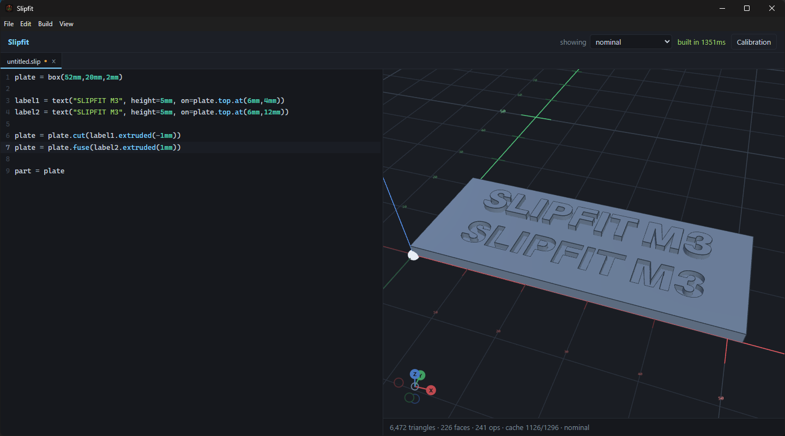
text(), two ways to use what it returns.
Reading that out loud
- height=5mm
- Cap height — the height of a capital letter, which is the number a caliper on the printed part actually reports. Ascenders reach above it and descenders below, because that is what the letterforms do; asking for 5mm and measuring 3.5mm is exactly the kind of number this tool refuses to produce anywhere else.
- on=plate.top.at(6mm, 4mm)
- Where the baseline starts. Two strings set on the same anchor sit on the
same line whether or not either has a descender in it.
label.widthis the width the string was set in — advances included — a little wider than the ink itself.
Aileron Black, by Sora Sagano (dotcolon.net), released under CC0 1.0 — named in
the export report, under data this model used. A bundled face is not a convenience:
a system font would make the same .slip produce different geometry on different
machines, for a reason that has nothing to do with your workshop, which is exactly the
distinction a printer profile exists to protect. font=
takes a path to a face of your own — .otf or .ttf — and that file
then joins the model's dependencies, watched for edits and disclosed the same as everything
else the model reads.
Counters, spacing and alignment
A letter with a counter — O, A, 8 — is one profile with a
hole in it. A letter drawn in two pieces, like i, is two profiles. Both extrude and
both fuse into the one solid the boolean takes, so neither needs anything special from you:
text("O", height=8mm, on=plate.top) # 1 profile, 2 wires
text("i", height=8mm, on=plate.top) # 2 profiles, 1 wire each
text("M3", height=5mm, on=lid.top.at(0mm, 0mm), align="center")
text("SPACED", height=5mm, on=plate.top, spacing=0.5mm)
align is "left" (the default), "center" or
"right", and says where the point you gave sits along the string. The
British spelling "centre" is accepted too.
spacing tracks the whole string apart.
Worth knowing rather than discovering: glyphs are laid out on the advance widths the face
specifies, not on the pair-by-pair spacing a proper shaping engine would read. Reading that
properly is the wrong dependency to add for setting four words on a bracket. If a pair looks
loose, spacing= moves all of them, and two separate text() calls
move just one.
Which letter drew this wall
Selection reaches lettering exactly the way it reaches any other swept wall:
sunk.faces(FromSegment("glyph 'S'")) # 14 faces
Every segment of one glyph carries the same label and the same source line — the honest answer,
since nobody wrote a line for the curve of the S, they wrote the text()
call. The inspector collapses a whole string into one entry for the same reason: clicking a
letter names the call that set it, not a curve index inside a font you did not draw.
Writing a .slip
Cuts that leave room
Cut one part out of another and the pocket comes out exactly the size of the part, which means
the part cannot go in. fit= leaves air.
This is the lid that will not drop onto the box, the peg that will not enter its own socket, the magnet pocket you have to hammer. It has nothing to do with your printer being inaccurate — a ⌀10 peg does not go into a ⌀10 hole on a perfectly accurate machine either. Two solids exactly the same size touch everywhere and move nowhere.
body.cut(peg) # the pocket is exactly the peg — it will not go in
body.cut(peg, fit=close) # a little air on every face
body.cut(peg, fit=free) # more: for parts that have to move
body.cut(peg, fit=press) # tighter than the peg: an interference fit| Fit | Ships at | Reach for it when |
|---|---|---|
close |
0.10mm per face | The two parts locate each other and then stay put. Lids, keys, alignment pegs. |
free |
0.25mm per face | Something has to slide, rotate or come apart in your hands. Hinges, drawers, sliding rails. |
press |
−0.05mm per face | It should have to be pushed, and then not come out. Dowels, magnets, bearing seats. |
none |
0.00mm | The same as not saying anything. The pocket is exactly the tool. |
Per face, which is the bit people misread
A gap is measured on each surface, not across the feature. close
at 0.10 puts 0.10mm of air on every side, so a ⌀5 peg gets a ⌀5.20 pocket — 0.10 on the left and
0.10 on the right. Say “0.1mm clearance” out loud and half the room hears 0.1 total.
body.cut(peg, fit=close). The dashed line is the pocket; the solid line is the peg
that has to go into it.
The gap is the same at every size. A ⌀50 peg also gets 0.10 per face, because clearance that
scaled with the part would be genuine slop on a big one. And because growing a shape moves
every face outwards, a blind pocket comes out 0.10mm deeper as well — which is the same
allowance nut_trap() and heat_insert() already make by hand.
A fit says two parts meet with air between them. fuse makes them one solid and
intersect has no mating surface, so neither has any use for one.
This is not calibration
Worth being clear about, because Slipfit has two different numbers that both look like “clearance”:
| A fitted cut | A calibrated fit | |
|---|---|---|
| Written as | cut(peg, fit=close) |
bolt_hole(M3, fit=free) |
| Answers | How much air two of your parts need between them | How much your printer shrinks a hole |
| Comes from | A number you type once, in Config › Hardware › Fits | A gauge you printed and pushed a bolt into |
Present when showing is nominal |
Yes — it is part of the design | No — it appears at export |
| Changes between printers | No | Yes, that is the point |
So a fitted cut is design intent: it is there while you edit, it does not move when you flip between nominal and as-printed, and no gauge measures it. Change the three numbers to taste in Build ▸ Calibration… ▸ Fits: pick the fit, type the gap, press Set fit. Each row states the diameter the gap implies as well as the gap itself, because per-face is the one thing about the number that is easy to misread.
A press fit shrinks the cutting tool, and a tool with a rib thinner than twice
the gap disappears — leaving a shape that is technically valid, encloses no volume, cuts
nothing, and would give you a part with no pocket in it at all. Rather than hand you that,
Slipfit stops:
press fit collapsed rib at -0.05mm
= the offset left nothing behind, so rib has a feature thinner
than 0.1mm; reduce the press fit gap in Config > Hardware > Fits“Config › Hardware › Fits” is the Fits section of the calibration sheet — Build ▸ Calibration…. That is the panel the message means; there is no separate Config menu.
Writing a .slip
Threads
A screw-on cap, a threaded boss, a jar lid. Real helical geometry above about a 2mm pitch — and the same design-clearance fits cuts that leave room already taught, not your printer profile.
tube = tube.add(thread(40mm, pitch=2mm, at=tube.top.at(0mm, 0mm), depth=12mm))
cap = cap.add(thread(40mm, pitch=2mm, at=cap.top.at(0mm, 0mm), depth=12mm, external=True))
A tapped hole by default; external=True cuts the male half instead, onto a boss you
have already built at the major diameter — one word turning the same call from a nut into a bolt,
rather than a second feature to learn. depth is required in practice: a thread run
all the way through a part is rarely what was meant, and is refused with its turn count once it
would run past forty turns.
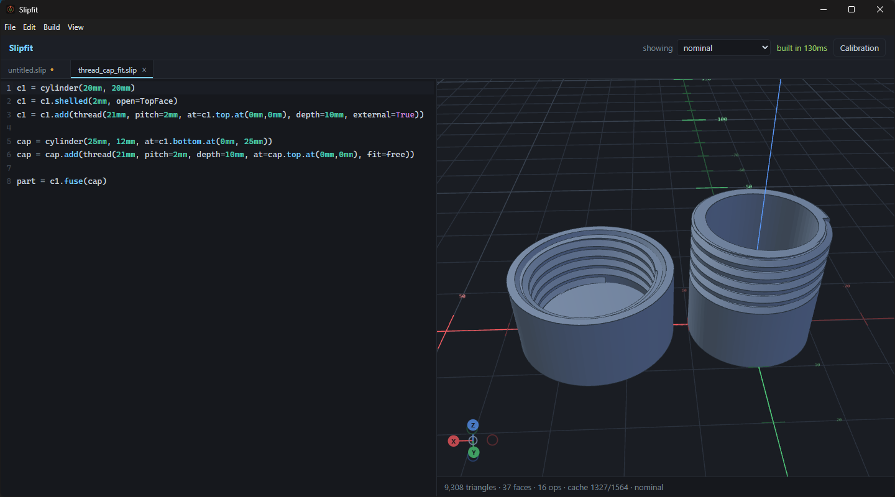
A diameter and a pitch
M8 and the rest of the bolt sizes still work exactly as before — a named size like
this is really a Thread carrying a diameter and its own coarse pitch, so
thread(M8, …) needs nothing else. A bare diameter has no such default, because the
metric series has nothing to say about what pitch a jar lid wants:
thread(M8, at=peg.top.at(0mm, 0mm), depth=10mm, external=True) # named size, pitch included
thread(40mm, pitch=2mm, at=tube.top.at(0mm, 0mm), depth=12mm) # bare diameter, pitch requiredFeatureError: thread(40mm) needs a pitch
= a bare diameter has no standard pitch to fall back on — give one, like
pitch=2mm, or name a size such as M8. A printed thread wants a coarse
pitch: below about 2mm the flanks are shallower than one extrusion widthPrint threads coarse
This is the number that decides whether the feature works at all. Radial flank depth is
0.541 × pitch, and against a 0.4mm nozzle:
| Thread | Pitch | Flank depth | As 0.4mm extrusions |
|---|---|---|---|
| M3 | 0.5mm | 0.271mm | 0.68 — less than one |
| M8 | 1.25mm | 0.677mm | 1.69 |
| ⌀40 | 2mm | 1.083mm | 2.71 |
| ⌀60 | 4mm | 2.165mm | 5.41 |
An M3 thread's entire flank is shallower than a single bead, and its crest flat is a third of a
layer: the slicer rounds the whole feature into a plain cylinder. Threads become real
geometry around a 2mm pitch, which the metric coarse series does not reach below M20 —
for a machine screw, reach for tapping_hole() instead,
below.
The geometry is ISO 68-1's basic profile — H = P·√3/2, minor diameter
D1 = D − 1.0825·P, 60° flanks, a crest flat of P/8 — so the minor
diameters it cuts reproduce ISO 262's published figures rather than risking a second,
hand-copied version of the same standard that could quietly disagree with it. Right-hand,
single start, no runout: each absent rather than approximated.
A design clearance, not a printer reading
fit moves major and minor diameter together, so the flank angle itself stays
untouched — but unlike everywhere else fit comes off a gauge, this is
design clearance from Config › Hardware › Fits. Both
halves of a printed thread come off the same nozzle: there is no unprinted bolt for a measurement
to compensate toward, so a thread reads the same number an ordinary
cut(tool, fit=free) already uses between two of your own parts.
A gap is still per face, but it lands on a 60° flank rather than a flat one, so it reads
differently from the fits table you already know. A radial offset δ gives exactly
0.5 × δ of clearance normal to the flank, and both halves are offset, so:
| Fit | Per face | Flank clearance | Backlash at 2mm pitch |
|---|---|---|---|
free |
0.25mm | 0.25mm | ~0.29mm — loose, assembles anywhere |
close |
0.10mm | 0.10mm | ~0.12mm — needs a calibrated machine |
press |
−0.05mm | interference | will not turn |
Start at free for a printed pair. It is loose enough to swallow the
dimensional error an uncalibrated printer contributes to both halves at once —
close is the right answer only once you already know your machine holds size.
fit= on a swept cutting tool
This is exactly why thread() moves its own section before the sweep rather than
growing the finished solid afterwards. A fitted cut ordinarily grows the tool with an
OCCT face offset, and offsetting hundreds of ruled flanks running alongside one another is a
different kind of problem — a hand-built 6-turn ⌀40 thread used as an ordinary
cut(tool, fit=free) tool runs for about 215 seconds and then fails outright, with
"the offset left a null shape." Reach for thread() itself; it never grows
a solid after the fact.
Tapping holes, for the sizes a thread cannot print
boss = boss.add(tapping_hole(M3, at=boss.top.at(0mm, 0mm), depth=8mm))
The feature for a machine screw. It cuts a plain hole at the tap-drill diameter
D − P — 2.5mm for an M3, 6.75mm for an M8 — and the screw forms its own thread on the
way in, displacing material rather than relying on the printer to have resolved a 0.27mm flank.
It is what a workshop already does at these sizes, given a name instead of a habit.
fit defaults to None here, and deliberately — unlike
bolt_hole. D − P is already the answer; opening it by a clearance meant
for parts that slide would remove the interference the screw actually needs to bite. Pass a fit
only if your printer runs tight enough to split a boss. The hole also asks the slicer for four
extra perimeters, because a screw cutting its own thread puts the wall in hoop tension, and
splitting along a layer line is how that fails.
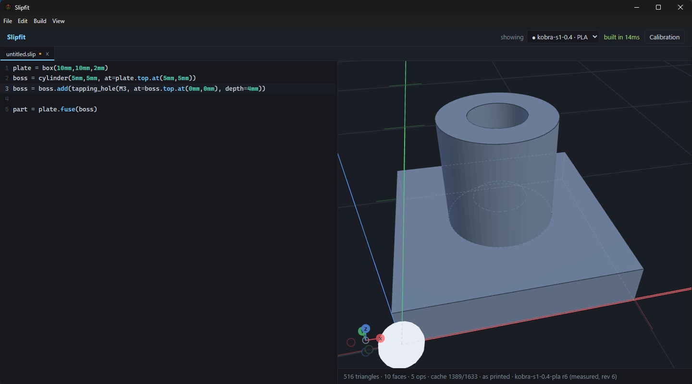
One line in the chain, whichever one you used
Underneath, a thread is a helical sweep no .slip can name directly — the same
arrangement fit= already uses behind an ordinary cut(). A tapped hole
is a hundred small faces in the raw geometry, and every one of them resolves to the
thread() call rather than to anything inside the sweep:
▸ internal thread M8 × 1.25mm case.slip:22
major ⌀8.00mm minor ⌀6.65mm
tapping bore ⌀6.65mm
depth 12mm (9.6 turns at 1.25mm)
lead-in chamfer 0.6mmWriting a .slip
Choosing edges and faces
You need this to round corners and break sharp edges. It is the part of Slipfit most worth understanding properly, and the part that trips people up.
A solid is made of faces — the flat and curved surfaces you could put a finger on — and edges, the lines where two faces meet. A plain box has 6 faces and 12 edges. Drill one hole through it and it has 7 faces and 15 edges: the wall of the bore is a new face, and there is a new circular edge at each end of it.
In a mouse-driven CAD program you would click the edges you wanted rounded. Here you describe them, and the description is worked out afresh every time the part is built. That is the trade, and it is worth being honest about it: clicking is quicker the first time, and a description still means the right four edges after you have made the plate 20mm longer, moved a hole and added a slot.
Reading a selector out loud
solid.edges(…) and solid.faces(…) take a description of which ones you
mean. Each name in the catalog below is one test, and three symbols glue tests together:
| Symbol | Read it as | For instance |
|---|---|---|
& |
and — both must be true | Vertical & LongerThan(20mm) — upright and over 20 long |
| |
or — either will do | TopRim | BottomRim — the top outline or the bottom one; 8 edges on a plate
|
~ |
not — everything except | ~Vertical — every edge that is not upright; 8 on a plain box |
So Vertical & Touching(plate.bottom) reads as “edges that run up and down, and
that meet the plate's bottom face”, which on a plate is its four upright corners. Round brackets
group things, exactly as in arithmetic.
the four upright corners
the outline of the top face
the outline it sits on
plate.edges(Vertical) # 4 on a plain box
plate.edges(Linear) # 12
plate.edges(LongerThan(25mm)) # 4
plate.edges(~Vertical) # 8
plate.faces(Planar) # 6
plate.faces(FacingUp) # 1Recipes for the things people actually want
Counts are for a 40 × 20 × 3 plate with one ⌀6 hole through the middle of it. Everything here is built from the catalog below — none of it is special.
| You want | Write | Matches |
|---|---|---|
| The four upright corners, to round them off | Vertical & Touching(plate.bottom) & OnFace(Planar) |
4 edges |
| The outline where the part meets the bed | BottomRim |
4 edges |
| The outline of the top | TopRim |
4 edges |
| The mouth of the hole, on the top face only | Circular & OnFace(plate.top) |
1 edge |
| Both mouths of every ⌀6 hole | Circular & Diameter(6mm) |
2 edges |
| Every edge on the whole part | Anything |
15 edges |
| The top face itself | TopFace |
1 face |
| The wall of the bore | Cylindrical |
1 face |
The catalog
| Edges only | Matches |
|---|---|
Linear Circular |
Straight ones, round ones. |
Vertical Horizontal |
Straight, running with or square to the build direction. |
LongerThan(q) ShorterThan(q) |
By length. |
Touching(target) |
Meets the target face without lying on it. |
OnOuterWire(target) |
On the target's outer boundary, ignoring its holes. |
| Faces only | Matches |
|---|---|
Planar Cylindrical Conical |
Flat ones, round ones, tapered ones. |
SurfaceIs("bspline") |
Any surface type, by name. |
FacingUp FacingDown Facing(v) |
Flat, and looking that way. |
Highest Lowest |
Where the face begins — see the note below. |
| Either | Matches |
|---|---|
Anything |
Everything. The default. |
Radius(q) Diameter(q) |
A round edge or a round face of that size. |
AtHeight(q) |
Flat at this height. |
OnFace(target) |
Lying on that exact face. |
Four combinations are common enough to have names of their own: TopFace,
BottomFace, TopRim and BottomRim. They are built from the
pieces above, not from anything special.
A box's four walls all reach the top, so comparing tops would select five faces out of six.
On a base with a tower on it, FacingUp matches two — the tower top and the base
shoulder — and Highest matches only the tower top.
Three ways to say “near that face”
The differences are not pedantry — getting this wrong is what puts a chamfer around a hole you did not want chamfered.
| Selector | On a plate with a bore | Means |
|---|---|---|
OnFace(plate.top) |
5 edges | The top face's own edges — 4 rim, plus the mouth of the bore. |
OnOuterWire(TopFace) |
4 edges | The rim only. Holes excluded. Same as TopRim. |
Vertical & OnFace(plate.top) |
0 edges | Correctly nothing — a corner edge meets the top face at a point but does not lie on it. |
Vertical & Touching(plate.top) |
5 edges | The four corner edges — and the bore's seam, which is also upright and also meets the top. The next bit is about that fifth one. |
Why that last one grows a third term as soon as there is a hole
The corner-edge selector stops being four edges the moment you drill through the plate. A round bore has a seam running down it where its surface closes on itself, and that seam is an upright edge touching the bottom face — so it joins the selection:
| On the plate with a ⌀6 bore | Matches | |
|---|---|---|
Vertical & Touching(plate.bottom) |
5 edges | The 4 corners and the bore's seam. |
Vertical & Touching(plate.bottom) & OnFace(Planar) |
4 edges | Only edges lying on flat faces. The corners. |
Which is why the fourth worked example carries that extra term, and why
it also carries expect=4. A fillet run down the inside of a bolt hole is nobody's
intention, and it is the kind of thing you notice after the print rather than before it.
Say how many you expect
expect= turns a description into a claim. It is the difference between a model that
breaks loudly when the geometry changes and one that quietly rounds the wrong edges:
plate.edges(Vertical, expect=4) # returns the 4
plate.edges(Vertical, expect=3) # SelectionError: expected 3 edges, matched 4Use it wherever you know the count. Selecting nothing is the failure that wastes an afternoon.
You do not have to work out in your head how many edges something matches. Ask for a number you know is wrong, save, and read the answer off the error:
SelectionError: expected 1 edge, matched 4
= selector was VerticalThen put the real number in. It costs one save, and it is the fastest way to find out whether a description means what you think it means.
Put the text cursor on a line and every face that line produced lights up in the viewport. Click a face and the lines that made it light up in the editor. So a fillet that landed somewhere unexpected can be traced back to the line that asked for it without any guessing. See the inspector.
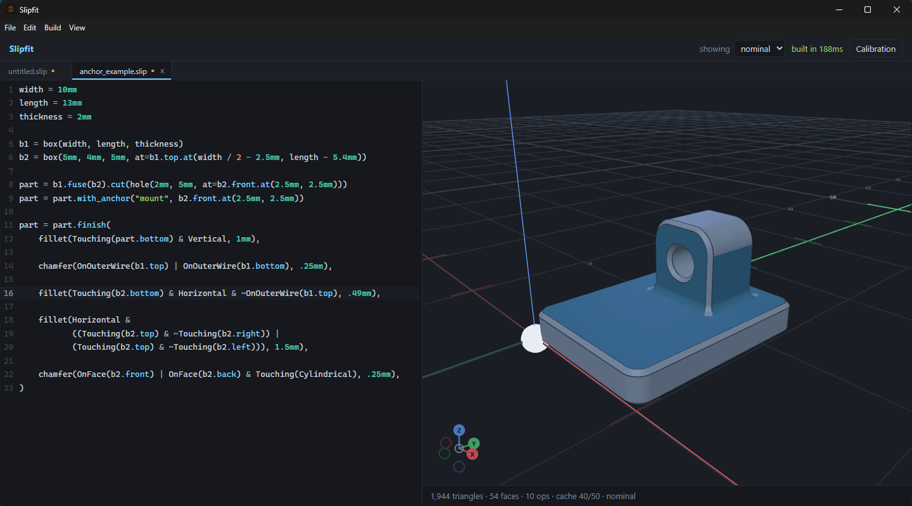
Writing a .slip
Hollowing out — shell
Turn a solid block into a shell of it, to a wall thickness you choose, with a face or two left open to get inside.
case = box(60mm, 40mm, 25mm).shelled(2mm, open=TopFace) # 13632mm3, 11 facesSix faces outside, five in, and the rim the opening left behind — a 20mm cube's worth of material scooped out to a 2mm wall, with the top left off to reach the cavity. Ask for more than one face open and, as everywhere else a face gets picked out, it is a description rather than a click:
tube = box(60mm, 40mm, 25mm).shelled(2mm, open=TopFace | BottomFace, expect=2)open= is required, never defaulted
A shell with nothing open is a sealed void — invisible, unreachable, and indistinguishable
from having forgotten the argument. It is also the one shell that needs no shell:
body.cut(inner) already gives you a sealed cavity, with better provenance and no
new operation. What shelled is for is the opening.
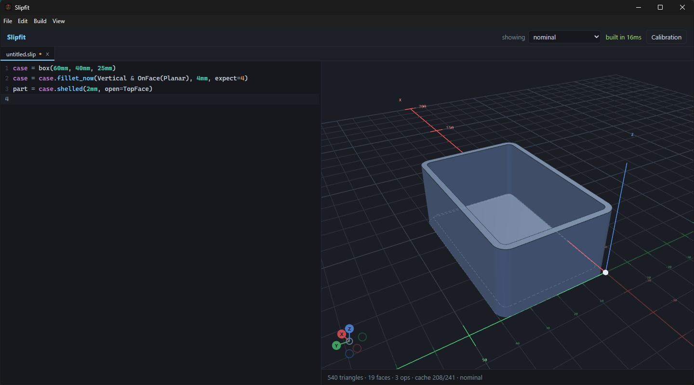
Reaching the inside
The shell adds no anchors of its own — the frame worth having is the cavity floor, and that face belongs to a shell that may not have hollowed there, so it is reached by arithmetic on a frame that is real:
floor = case.top.at(10mm, 10mm).offset(-23mm) # (10, 10, 2), facing up
part = case.add(heat_insert(M3, at=floor))
boss = cylinder(8mm, 6mm, at=floor) # standing on the cavity floor
top is the frame the cavity opens through, so walking down it by a negative
offset lands on the floor still facing the way a feature needs to be driven. The same point
reached from case.bottom.at(u, v).offset(-2mm) faces the other way — right for
something entering the floor from outside, wrong for something sitting in it.
Round the outside first and the inside comes along
case = box(60mm, 40mm, 25mm).fillet_now(Vertical & OnFace(Planar), 4mm)
case = case.shelled(2mm, open=TopFace) # 19 faces, inner radius 2mmFour rounded outer corners on a 2mm wall come back as four 2mm inner corners, for free — the inner face is the offset of the outer one, so a blend applied before the shell is carried through it. Blending after leaves the inside sharp instead, because the inner faces did not exist yet when the selector ran — the same ordering argument as everywhere else a description is matched against a solid.
A shelled wall still names the line that drew it
Shell downstream of a swept profile does not lose the ancestry either — both the outer wall and the inner one it became answer to the same run:
case = outline.extruded(20mm).shelled(2mm, open=TopFace) # the outline from earlier
case.faces(FromSegment("nose radius"), expect=2) # the wall, outside and inclick the inner curved wall
▸ shell(2mm) case.slip:21 modified
extrude(20mm) case.slip:19 created
nose radius case.slip:16 from segment
profile(on=top) case.slip:15 applied to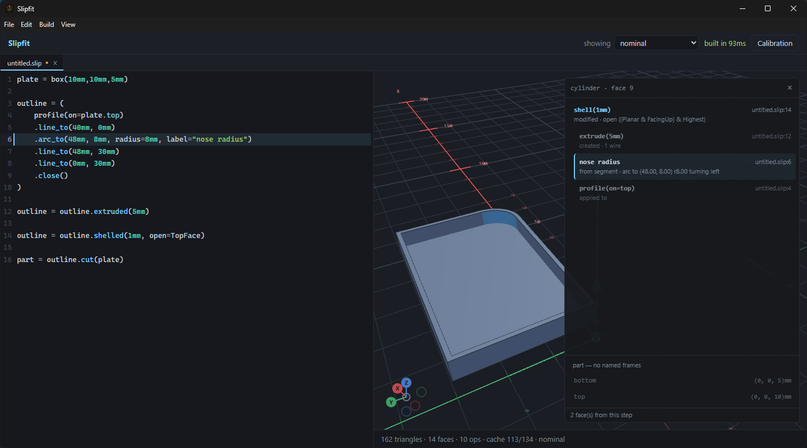
What it refuses, and why
OCCT's own shelling operation reports success and then, on the wrong input, hands back the original solid untouched, a shape of no volume, or a wall that is not the one that was asked for. None of those are trusted at face value — the wall is measured on every face that stayed closed, by pairing it with the inner face it became, so a refusal names the real thickness rather than guessing:
KernelError: shell(11mm) could not be built from blank
= OCCT reported the offset unfinished; the thickest wall blank takes is about 9.96mm
KernelError: shell(12mm) left a wall thinner than asked on knob
= the wall behind knob (case.slip:4) came back 8.00mm rather than 12.00mm, so the
inside is not the shape it should be; the thickest wall knob takes is about 9.93mmThat second one is the dangerous case left unchecked: ask a ⌀20 cylinder for a 12mm wall and the inner radius passes through zero and comes out the other side — a valid solid, a plausible volume, and a cavity that is not the one you asked for. The measured wall is what catches it.
KernelError: shell(2mm) hollowed nothing out of fuse(leg)
= every face came back untouched; no wall thickness hollows fuse(leg) at all — two
of its faces are coplanar and share an edge, one of them from arm (case.slip:1),
which stops the offset before it starts; the boolean that left them can merge
them with simplify=True
That one has a specific cause and a specific fix: two fused boxes sharing a face plane leave
both halves of it in the result, which stops the offset before it starts.
fuse(tool, simplify=True) merges them and the shell goes through.
These checks catch what is provably wrong — nothing removed, nothing left, a wall that is not the wall asked for — rather than second-guessing a shape OCCT built self-consistently from a request that was simply too much to ask of the material.
Writing a .slip
Fillets and chamfers
Rounding and bevelling happen last, in one pass over the finished shape.
A fillet rounds an edge off to a radius. A chamfer cuts it away flat, the same distance back along each of the two faces — a 45° bevel where those faces meet square. Both take a description of which edges, and one size.
a sharp corner
rounded over, to a radius
cut off flat, at 45°
Which one, on a printed part
| Where | Usually | Why |
|---|---|---|
| The outline where the part meets the bed | chamfer(BottomRim, 0.6mm) |
Gives a squashed first layer somewhere to spread, so the part still sits flat. A fillet here would start as a 90° overhang. |
| The mouth of a bolt hole | chamfer(Circular & OnFace(plate.top), 0.5mm) |
A lead-in, so the bolt starts straight rather than catching on the rim. |
| Upright outside corners | fillet(…, 2mm) |
Kinder to hands and to bags, and it takes the sharpness off a corner that would otherwise chip. |
| An inside corner, where a rib meets a wall | fillet(…, 2mm) |
Strength. A sharp internal corner is where a printed part cracks. |
A fillet or chamfer is not compensated the way a fit is: 0.6mm is 0.6mm on every machine, in every material. The table above is printing lore, not something Slipfit knows — your first layer and your slicer have opinions of their own, and the only way to settle them is a print.
Writing it
part = part.finish(
fillet(Vertical & OnFace(Planar) & Touching(plate.bottom), 2mm, expect=4),
chamfer(TopRim, 0.6mm),
)
finish() takes as many of these as you like, separated by commas, and hands back
the finished solid — so it needs part = in front of it like everything else. That
trailing comma after the last one is allowed on purpose: it makes adding the next one a one-line
change instead of a two-line one.
Why last
The reason is the description, not the geometry. A description run at the end is matched against the completed solid, so it catches every edge the part ended up with. Run in the middle, it is matched against a half-built shape and misses everything created afterwards.
That is a real difference. Take a plate, cut a notch in one side, and fillet the vertical corners:
| Order | Faces in the result |
|---|---|
Cut, then finish(fillet(…)) |
18 |
fillet_now(…), then cut |
14 |
Different solids. The notch creates vertical edges the early pass never saw. Where the
half-built shape really is what you meant — a cutting tool you want rounded — fillet_now()
and chamfer_now() do it there and then.
Sometimes you may want to fillet_now() or chamfer_now(). It can make selection
easier, or shape a cutter before the .cut() operation.
How big a blend can be
Big enough to fit in the material, and no bigger. It has to eat into both faces the edge separates, on every edge you selected — so a radius that is fine on one corner can still fail because of the short face next to it, and the message names the whole set rather than one edge:
KernelError: fillet failed on 4 edges at 3mm
= 4 of 4 edges cannot take 3mm — the largest that works is 2.99mm
That is a 3mm fillet asked for on the top outline of a 3mm plate: the round would have to
consume the full thickness. The message names which edges, not just that the
fillet as a whole failed — each one is tried on its own and the search bounds the largest radius
it would actually take, so 2.99mm is not a guess. Where only some of a selection
fail, the other line says so: 3 of 8 edges cannot take 2mm — the largest that works is
1.4mm; the other 5 succeeded.
Round the four upright corners of the same plate instead and the limit is the 20mm width — 9.9mm works and 10mm does not, because two 10mm radii on a 20mm side leave no straight bit between them. Ask for exactly that and each edge is fine alone, so the diagnosis says the honest thing instead — that the edges interfere as a set rather than naming one as the culprit:
KernelError: fillet failed on 4 edges at 10mm
= each of the 4 edges takes 10mm on its own — the blends
interfere with each otherThat is a different instruction than a single tight edge — move one, or blend the set in two passes — which is why it is reported as itself rather than folded into the same sentence as a straightforward failure.
There is no arithmetic to do here. Come down in steps until it works. A failed blend is an error you see on save, not something that reaches the printer — and the viewport lights only the edges that actually failed, narrowing eight selected down to the two or three worth looking at.
A fillet earlier in the list changes what a later chamfer can
select. Rounding four corners turns a 4-edge rim into an 8-edge one — 4 straights and 4 arcs —
so an expect=4 on the chamfer after it will fail. That is the claim doing its job;
read the count and update it.
Writing a .slip
Using another file
Write a part once. Use it from every model that needs it, and fix it in one place.
Copying a standoff into four models means correcting it four times, and finding out you missed
one after the print. use() runs another .slip and hands you what it
defined:
parts = use("./parts/standoff.slip")
pillar = parts.standoff(height=12mm)What comes back is that file's names, reached through the one you chose for it — here, parts:
| Written | Is |
|---|---|
parts.standoff(height=12mm) |
A recipe that file wrote, called with the size you want. Gives back a solid. |
parts.edge_margin |
A number it set. Its author's advice about the part, in a form you can do arithmetic with. |
parts.part |
The solid it built, if it built one. |
The name in front of the dot is yours — parts, rails,
fixings, whatever reads best. The names after it belong to the file you included.
Turning a shape into something worth including
Nothing marks a file as includable; it is an ordinary .slip. What separates one
worth including from a copy-paste is three small decisions:
-
Move the shape into its own file
Anywhere you like. A
parts/folder next to your models is the usual arrangement, and it keeps the paths short. -
Wrap it in a
def, so it has dialsA fixed 10mm standoff is used by one model. A standoff whose height you can ask for is used by all of them.
-
Give it an anchor to be mated by
with_anchor("seat", …)declares the spot that goes against something else, so whoever includes it never has to work out its coordinates.
edge_margin = 6mm
def standoff(height=10mm, outer=9mm, bore=3.2mm):
pillar = cylinder(outer, height)
drilled = pillar.cut(hole(bore, height, at=pillar.top.at(0mm, 0mm)))
return drilled.with_anchor("seat", pillar.bottom)Reading that def, if you have never met one
A def is a recipe with dials on it (Python function with parameters). The first line
names the recipe and lists the
dials, each with the setting it takes if nobody touches it. The indented lines underneath are
what the recipe does — the indentation is what says “this belongs to the recipe”,
which is the one place in Slipfit where whitespace changes the meaning. return is
what it hands back.
- def standoff(…)
- “Here is a recipe called
standoff.” It does nothing until somebody calls it. - height=10mm
- A dial named
height. If the caller says nothing, it is 10mm. - pillar = …
- Indented, so it is a step inside the recipe. The name
pillaronly exists in there. - return drilled…
- “This is the answer.” Whatever comes after
returnis what the caller gets.
| Called as | Gives you |
|---|---|
parts.standoff() |
10mm tall, ⌀9 outside, ⌀3.2 bore — every default. |
parts.standoff(height=12mm) |
12mm tall; the other two dials untouched. |
parts.standoff(height=12mm, outer=12mm) |
12mm tall and fatter; the bore left alone. |
Dials are named, so you set the ones you care about and skip the rest, in any order. That is the
same name=value arrangement at= and
axis= use, for the same reason — and it is the whole of the parameterization
mechanism. There is nothing else to learn.
This file never sets part, which is fine — it is a library, not a part. A file that
does set part works both ways: something you can open and print on its
own, and a component somebody else includes.
Where the file is
~/models/
lid.slip use("./parts/standoff.slip")
bracket.slip use("./parts/standoff.slip")
parts/
standoff.slipPaths are relative to the file that wrote them.
use("./parts/standoff.slip") looks next to this file, so a folder of parts
can be moved or zipped up and sent without editing anything. Full paths work too — they just
will not travel to anyone else's machine.
./ means “starting here”; ../ means “up one folder from here”. If
the file has never been saved, here does not exist yet, and a relative
use() says so rather than guessing.
Putting it where you want it
An included part is built wherever its own file built it, usually at the origin.
.placed() brings one of its anchors onto a point on your part:
pillar = parts.standoff(height=12mm).placed(
"seat", onto=plate.top.at(10mm, 10mm)
)
part = plate.fuse(pillar)
Every anchor points out of the material it belongs to, and .placed() brings the two
nose to nose — the standoff's seat looks down, the plate's top face looks
up, and they meet. That is why the pillar ends up standing on the plate rather than sunk into
it, and it is the same convention as two magnets snapping together:
Two adjustments cover most of what is left. spin=30deg turns the part about that
shared axis, and .offset(-1.5mm) on the point sinks it into the face instead of
seating it on top:
.placed("seat", onto=plate.top.at(10mm, 10mm).offset(-1.5mm), spin=30deg)
For arrangements no anchor describes, .moved(x, y, z) and
.rotated(30deg, about=plate.top) are there. Prefer .placed() where it
fits: a wrong anchor name is an error, and a wrong coordinate is just a part in the wrong place.
The whole thing
A plate with four standoffs, none of which are written in this file:
plate_x = 70mm
plate_y = 50mm
thickness = 5mm
height = 12mm
parts = use("./parts/standoff.slip")
plate = box(plate_x, plate_y, thickness)
bed_face(plate.bottom)
# The four corners, inset by the margin the library recommends.
inset = parts.edge_margin
corners = [
(inset, inset),
(plate_x - inset, inset),
(inset, plate_y - inset),
(plate_x - inset, plate_y - inset),
]
part = plate
for x, y in corners:
pillar = parts.standoff(height=height).placed(
"seat", onto=plate.top.at(x, y)
)
part = part.fuse(pillar)
part = part.finish(
chamfer(BottomRim, 0.6mm),
)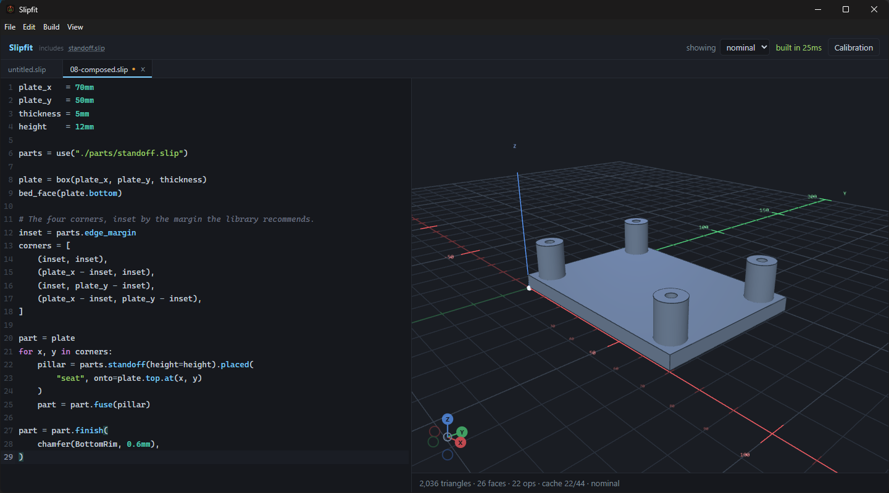
When it does not work
Every one of these names the file that is actually wrong, and says what that file does offer:
IncludeError: standoff.slip defines no 'standof'
= it defines: edge_margin, standoff
IncludeError: standoff.slip defines no `part`
= that file is a library, not a part — call one of its functions
instead: edge_margin, standoffWhat you get for free
- Edit the library, and this rebuilds. Slipfit watches the files your model pulls in, so correcting the standoff updates every model open against it without you touching anything.
- Errors point at the right file. A mistake inside
standoff.slipis reported against that file, with its own line underlined — not against the line you wroteuse()on. - The inspector crosses files. Click a standoff's wall and the chain names
parts/standoff.slip:23, then walks out to the line in your model that placed it.
Opening a model that includes three others means running all four, so the trust prompt lists
every one of them before anything executes. A .slip from a stranger is a program
from a stranger, and that is as true of the files it pulls in as of the file you clicked.
Writing a .slip
Bought parts — use_step()
The things you model around are usually parts you did not draw — a servo, a
bearing, a connector. use_step() reads one and hands back an ordinary solid.
servo = use_step("./vendor/sg90.step")
part = plate.cut(servo.grown(0.4mm)) # 0.4mm of clearance all round, then cut
What comes back is placeable, cuttable, measurable and anchorable — everything a
box() is. examples/bearing-mount.slip is this worked through: a 608
bearing read out of a 39 kB vendor file — ⌀22 × 7mm, 4 faces — seated in a block sized from the
import's own size() rather than from numbers typed twice into the file.
Millimeters, whatever the file says. A STEP declares its own unit and the reader converts on the way in: a 25.4-unit cube in a file declared in inches arrives as 645.16mm, which is what it really is. Nothing about a part that comes in 25.4× too large fails — it simply does not fit — so that conversion is the one thing here that is pinned by a test rather than assumed.
One anchor, called origin
It is the file's own datum, at (0, 0, 0) in the file's own coordinates. There are
deliberately no bounding-box anchors — a bought part's faces are not top and
bottom, and six frames floating on a box nobody drew would look exactly like a
primitive's and mean something else entirely. Name what you actually need, once:
bearing = use_step("./vendor/bearing-608.step")
bearing = bearing.with_anchor("far_face", bearing.origin.at(0mm, 0mm).offset(7mm))
That 608 was drawn on its own axis, so origin is already the middle of the face
nearest the file's own view; far_face is the other one, 7mm along. From then on the
model says bearing.far_face and never repeats the 7.
Several solids is an error, not a guess
Most vendor files hold more than one solid. That is refused, by name — not by picking the first one and hoping:
StepError: FAULHABER_2342L-012CPR.step contains 51 solids, not one
= use_step("FAULHABER_2342L-012CPR.step", "…") picks one: Main Motor, Top,
Thin shaft, Thick shaft, Cage, Gear, White, Plastic protector, Black box,
Metal, Plastic protector 2, Plastic gear ×2, and 21 morehousing = use_step("./vendor/FAULHABER_2342L-012CPR.step", "Top")
Taking the first silently would be exactly the wrong-but-confident answer this tool refuses
everywhere else, and it is not a hypothetical worry: the first solid in that gearmotor file is
Main Motor, its bare can rather than the gearbox somebody wanted to mount, and the
first solid of a Raspberry Pi 4B model is the bare board — without the connectors that were the
whole reason to want clearance around it.
Two more refusals, both things real vendor files actually do:
- A name shared by several solids. That same gearmotor carries nine solids all called
Gear 4mm int diam; the file gives them one name, so nothing here can tell them apart, and it says so rather than silently picking one. - A file with no solids in it. A surface model is an export setting somebody chose upstream, and the error counts the shells and faces it did find — "this file is surfaces" and "this file transferred nothing" call for two different fixes.
Provenance is complete, not degraded
Click any face of an import and the inspector names the use_step() call and its
line, the same way a library part's chain names the file it came from:
click the bearing seat
▸ cut(grow(+0.15mm)) bearing-mount.slip:38
grow(+0.15mm) bearing-mount.slip:38
placed(origin) bearing-mount.slip:34
use_step("bearing-608.step") bearing-mount.slip:18That is the whole truth: there is no ancestry inside the import because there is no ancestry inside it — the file is where it came from. So an imported face carries no "degraded" mark. That mark means resolved through a fallback elsewhere on this page, and putting it here would be a false claim about a shape whose entire history is one line.
Opening a STEP parses it; nothing in it executes. It still needs to exist and still costs
build time on a large one — the Raspberry Pi board above took 14.8 seconds on first read and is
free on every rebuild after, from the same op cache everything else uses. See
Opening a file is not running it for how it is disclosed differently from
a .slip.
Writing a .slip
Multiple bodies — assembly()
part has always named the one solid a model produces. It may now name
several, and each becomes an object in the file it exports to.
part = assembly(body=jar, lid=cap)
A bare solid bound to part still means exactly what it always did — this is a
widening, not a migration, and nothing you have already written changes. assembly()
takes keyword arguments rather than a list, which buys three things without any checking of its
own: the names are unique (Python refuses a repeated keyword before this function is ever
reached), they are written in the order you gave them, and each is an identifier — so a name is
always something you can hand back to use_step(path, "lid").
Names are declared, never guessed
Slipfit will not work out what to export by scanning your variables — a cutting tool and an
abandoned experiment are variables too, and promoting either into an exported object is the kind
of mistake you find after the print. If a solid is not named inside assembly(), it is
not in the file, no matter how many lines of the model built it.
The name is the declaration's, not the variable's: assembly(base=chassis) writes a
body called base even though the model called it chassis everywhere
else. That split is deliberate — the variable name is what the anchors panel and the viewport's
gizmos use while you work, and the body name is what ships. A solid may even appear under two
names, assembly(left=arm, right=arm), which is two copies of one part and an
ordinary thing to want from a printer rather than the copy-paste mistake it resembles.
What each export format does with several bodies
| Format | Several bodies become |
|---|---|
| 3MF | One named part volume per body, in the container's <components>
structure — one object your slicer opens, with each body kept apart inside it. |
| STEP | One named product per body. use_step(path, "lid") reads one back out —
exactly what lets you buy back your own design later. |
| STL | One mesh. An STL has no notion of an object at all, and the export report names the bodies it had to flatten together. |
examples/tour/09-assembly.slip is this worked through: a jar with an external
thread on its neck and a cap that screws onto it, built as one file and exported as two named
objects, body and lid — 23,127.69mm³ across 14 faces for the jar,
11,445.61mm³ across 19 for the cap.
With two or more bodies on screen, the inspector title is qualified by name —
lid · planar · face 3 rather than just planar · face 3 — because
"which one did I just click" is the first question a pick raises once there is more than one
thing to click.
Writing a .slip
Clearance and interference
Two more dimensioned values, so whether your parts actually fit together is
something you can assert rather than find out at the printer.
assert clearance(lid, base) >= 0.15mm, "the lid needs room to drop in"
assert overlap(pin, base) > 0mm3, "the pin is supposed to be a press fit"| Function | Answers | Where they touch or interfere |
|---|---|---|
clearance(a, b) |
A length — the narrowest gap between two solids. | 0mm. A distance is never negative, so this is never a signal that two
parts overlap — that question is overlap()'s. |
overlap(a, b) |
A volume — how much space two solids share. | 0mm3 where they do not. |
Slipfit measures; you judge. There is no built-in clearance threshold anywhere in the tool, on purpose: a press fit is supposed to overlap, so the right number differs per pair of parts and only you know it. Bake one in and every correct press fit in every model reports as a fault.
Every pair, on the export report
You do not have to write an assert to see these numbers. Every pair of bodies named
in assembly() is measured automatically and listed on the
export report — a row apiece, whether or not you asked:
overlap base ↔ pin 10.71mm3 press fit declared -0.05mm/face
clearance base ↔ lid 0.2mm
clearance pin ↔ lid 0.2mm
The first row has a verdict because the model said something about that pair — base =
base.cut(pin, fit=press) declared a press fit, so the measured overlap is compared against
it. The other two rows have no verdict at all: nothing in this file said what base
and lid are supposed to be to each other, so they get a number and no opinion. A
.placed() mate is the other kind of declared intent — two
frames said to be coincident is a declared clearance of zero.
The pairwise scan runs over what assembly() names, not over every solid your
model happens to build. A cutting tool that never made it into assembly() — the
pin you subtracted and then discarded — is not on this list, because it is not in the file
either.
Parts that fit
Bolts, nuts and inserts
Three words that say what goes in the hole, and let the millimeters be decided later.
bed_face(plate.bottom)
part = plate.add(
bolt_hole(M3, at=plate.top.at(10mm, 15mm), fit=free),
nut_trap(M3, at=plate.bottom.at(40mm, 15mm)),
heat_insert(M3, at=plate.top.at(50mm, 15mm), boss=True),
).add() applies these in order, exactly as .finish() applies fillets.
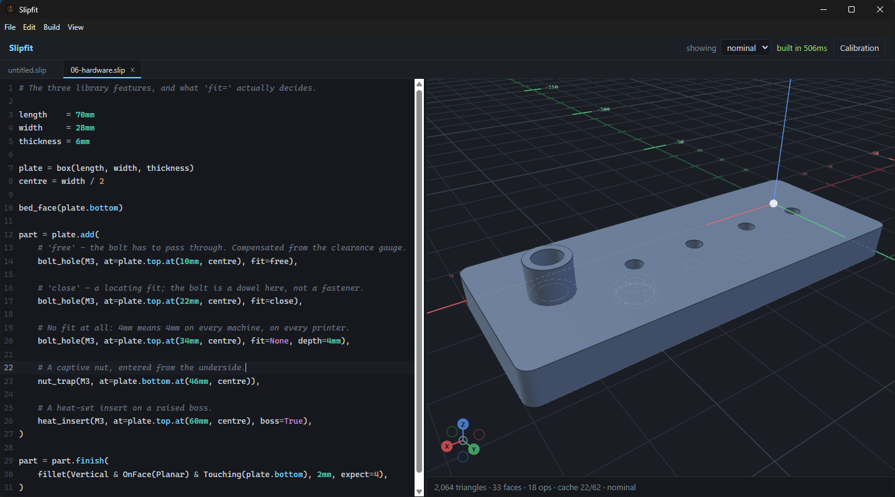
| Feature | Cuts | Compensated on |
|---|---|---|
bolt_hole |
A clearance hole, all the way through unless you give it a depth=. |
The hole diameter, by fit. |
nut_trap |
A hex pocket, a lead-in chamfer, and a clearance hole through to it. | The nut's across-the-flats size. |
heat_insert |
A pocket, plus a raised boss if you ask for one. | The insert's outside diameter. |
A jar lid, a screw-on cap, a case with a threaded boss — thread() and
tapping_hole() live under Threads, back in
Writing a .slip. They are sized like the rest of this page, but they are not
compensated like it: nothing here is measured off a gauge, because a printed thread's
other half is printed too.
fit= — how tight the bolt hole is
| Value | Means |
|---|---|
free |
The bolt passes through freely. The default, and the one the shipped gauge measures. |
close |
A locating fit — the bolt is acting as a dowel, not a fastener. |
press |
An interference fit. |
None |
No compensation at all. The hole is exactly the size it says, on every machine. |
Only clearance holes take a fit. A nut trap that is loose is a failed nut trap, and an insert pocket has exactly one right answer — so neither is offered the choice.
hole(7mm, …) is 7mm on every printer, forever. Only a declared
fit=, a nut trap or an insert pocket gets your workshop's answer applied. A bare
dimension stays bare — which is what makes it safe to type one.
bolt_hole(M3, fit=free) and body.cut(peg, fit=free) use the same
word for two different jobs. The first is your printer's measured error, applied at export. The
second is design clearance between two of your own parts, present all the
time. Same word, because from where you are sitting both are “how much room does this need”.
bed_face() — which way up it prints
bed_face(plate.bottom) records a decision: this face goes on the bed. It matters
because Slipfit only compensates features printed vertically — a hole 10° off vertical is a
genuinely different print — and one that is not gets reported rather than
silently adjusted.
Sizes and standards you can name
Threads: M2 M2_5 M3 M4 M5
M6 M8 M10 M12.
| Standard | What it is | Tabled for |
|---|---|---|
DIN_912 |
Hex socket head cap screw (ISO 4762) — the usual allen bolt | M2–M12 |
ISO_7380 |
Hex socket button head | M3–M10 |
DIN_934 |
Plain hex nut (ISO 4032) | M2–M12 |
DIN_985 |
Nyloc nut | M3–M12 |
Ask for a size outside the tabled range and you get an error naming the range, rather than a plausible-looking head diameter somebody invented for you.
A cut against something that touches nothing succeeds and changes nothing, so a feature placed off the part would give you a clean build and a silently missing hole. Slipfit checks and refuses:
M3 clearance hole at top(80.00, 10.00, 3.00) removed no material
= the position is off the part, or the feature sits entirely outside it
— check the anchor and the offsetsInserts are a product, not a standard
There is no standard for heat-set inserts. A CNC Kitchen M3×5.7 is 4.6mm across the knurl; a generic marketplace one may be 4.0mm with a different taper. So which insert you own is part of your workshop, exactly like your printer — not something a shared file can say.
Describe yours in Build ▸ Calibration… ▸ Hardware: pick the size, give the knurl at its widest and the body end to end, tick I measured these if you actually did, and press Set insert.
| The panel asks | Measure |
|---|---|
| Size | M3 to M12. Only M3 ships configured — shipping plausible numbers for sizes nobody has confirmed owning would be inventing hardware. |
| Outside diameter | The knurl at its widest. This is the number the gauge steps away from, so a guess costs you a print. |
| Body depth | End to end. |
| Flange (optional) | Leave blank for a plain straight-knurled body. Blank means absent, which is not the same as zero. |
| “I measured these” | A claim, not a formality — it reaches the export report, so a figure copied off a marketplace listing is never presented as one you took with calipers. |
A reading is filed against the knurl it was taken on, so switching brands leaves your old measurement true of the old insert and never consulted for the new one. But between changing brands and printing the new gauge strip, an export is answered from the old reading — and if the new diameter happens to fall between two old ones it is answered with no warning at all. The Hardware panel shows which knurl each reading was taken on, so you can see the mismatch before it becomes a part.
heat_insert(boss=True) is opt-in, because whether a boss is needed depends on how
much material is under that point. A boss you did not ask for is a confidently wrong answer; a
missing one is visible immediately.
Parts that fit
Calibration
Print three small gauges, push real hardware into them, and click the step that fitted. About 40 minutes of printing, once, and then never again for that printer.
Slipfit calibrates by fit gauge, not by caliper. Measuring a printed hole with calipers bakes your technique into every future export — jaw pressure on an elephant-footed edge, tips that never reach true diameter, plastic that is still cooling — and it measures an idealised fastener rather than the one actually in your drawer. Pushing the real bolt into a row of real holes measures the thing you care about.
It all happens in one window. Open Build ▸ Calibration… (Ctrl/Cmd + K) and a sheet slides over the viewport with five sections in it, in the order you need them.
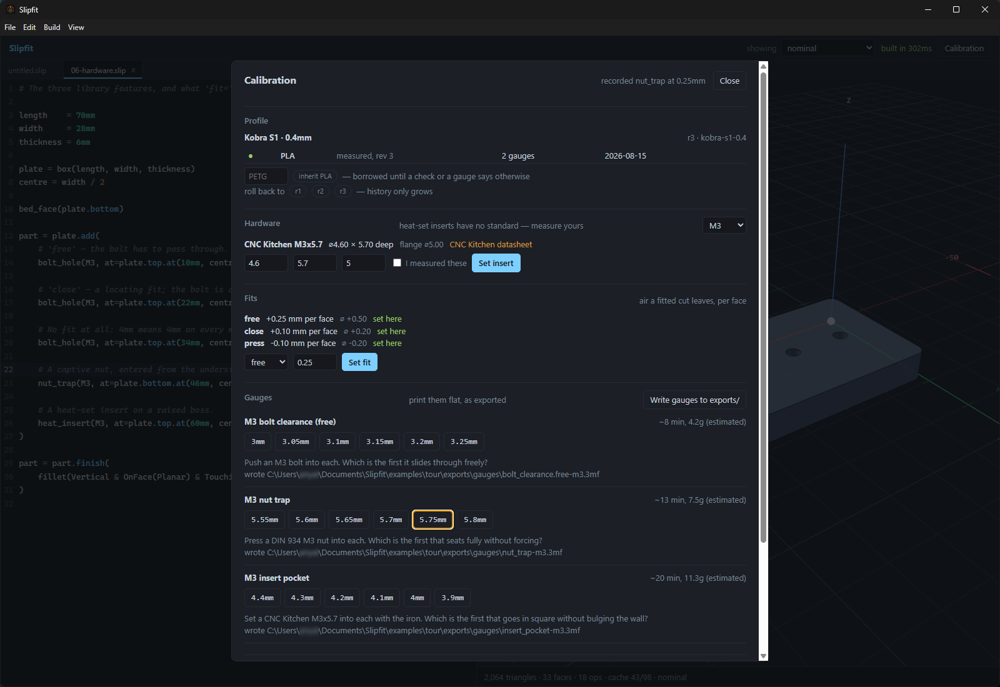
| Section | What it is for |
|---|---|
| Profile | Which printer this is, and what has been measured on it. Also where you add a second material and roll back a bad reading. |
| Hardware | Which heat-set inserts you own, and the thread size everything below is about. |
| Fits | Air a fitted cut leaves, per face. Design intent — nothing here is measured. |
| Gauges | The three strips, with a print estimate each. Writes them, and takes your answer. |
| Compensation in this build | What the model currently open actually got, so you can see the loop having worked. |
Every action reports there — describing gauges…, building gauges…,
recorded bolt_clearance.free-m3 at +0.20. If you are not sure whether a click
landed, that line is the answer.
-
Check what is in the drawer
The gauges are built for the hardware Slipfit currently thinks you own:
Ships as bolt DIN 912 hex socket cap screw, M3 nut DIN 934 plain hex nut, M3, 5.5mm across the flats insert CNC Kitchen M3×5.7, 4.6mm across the knurl You need a few of each, plus a soldering iron with an insert tip for the third gauge. Any M3 cap screw will do. Nyloc nuts are the same across the flats as plain ones, so the nut gauge still measures the right thing.
-
Describe the printer
With no profile yet, the Profile section says so and shows one row of boxes. Fill them in and press Create profile:
Box Put in printer Whatever you call it — Kobra S1. Only you read this.nozzle, mm 0.4unless you have changed it. This is the number that matters: extrusion width is what drives hole undersizing, and layer height barely affects width at all.build volume, mm 220x220x250. Check it against your actual bed — it is only used for the “does this fit” line at export, so a wrong number misleads rather than breaks.reference material PLA, or whatever you print most. Everything else you add later borrows from this one.Image goes here images/calibration-profile.png · 1400 × 420 The Profile section: the empty state with the four boxes and Create profile, and beneath it the same section once a profile exists — name, revision, the materials table, and the roll-back chips.The form disappears once there is a profile; the panel above it takes its place. That makes one profile at revision 1, filed under printer plus nozzle —
kobra-s1-0.4. From now on the section shows that profile instead of the form: its name, which revision you are on, and a table of materials with a mark against each one. -
Say which inserts you own
Do this before printing anything, because the insert gauge is built from your knurl. In Hardware, pick the thread size from the dropdown on the right, then fill the row underneath and press Set insert.
Image goes here images/calibration-hardware.png · 1400 × 360 The Hardware section: the size dropdown, the current insert row, and the form — knurl ⌀, depth, flange ⌀, the “I measured these” tickbox and Set insert.Box Measure thread size M3 to M12. Only M3 ships configured — shipping plausible numbers for sizes nobody has confirmed owning would be inventing hardware. knurl ⌀ mm The knurl at its widest. The gauge steps away from this number, so a guess costs you a print. depth mm The body, end to end. flange ⌀ Leave blank for a plain straight-knurled body. Blank means absent, which is not the same as zero. I measured these A claim, not a formality — it reaches the export report, so a figure copied off a marketplace listing is never presented as one you took with calipers. That dropdown drives the whole sheetThe size you pick in Hardware is the size the Gauges section below describes. For the insert those are one question — a station is your configured knurl stepped away from itself — so choosing M5 and gauging M5 cannot be separate choices.
-
Write the gauges and print them
The Gauges section already describes all three before you build anything — name, print estimate, the stations and the question each one asks. Press Write gauges to exports/ and it builds them and tells you where each landed.
Image goes here images/calibration-gauges.png · 1400 × 620 The Gauges section: three blocks, each with its name, its estimate, a row of station buttons, its question, and thewrote …line under it after writing.The stations are grayed out until a profile exists — there would be nowhere to record an answer. Gauge Size Rough cost M3 bolt clearance 60 × 12 × 5mm ~8 min, 4.2 g M3 nut trap 80.1 × 15.4 × 5.4mm ~13 min, 7.5 g M3 insert pocket 75.6 × 14.6 × 8.7mm ~20 min, 11.3 g Those times come from an assumed flow rate, not a measurement — they are there to order the three by cost. Your slicer's number is the real one.
The print settings are what decide whether any of this is worth doingSlice them with the exact profile you will print parts with — same layer height, nozzle temperature, speeds, flow and filament. A gauge printed at 0.2mm and parts printed at 0.28mm have measured a machine you are not using.
Print them flat, as exported — do not rotate them. No supports, no scaling. Brim is fine. Print all three in one session on the same spool if the bed allows.
Waiting on the panelDescribing all three gauges takes a second or two the first time you open the sheet for a size, and is instant every time after that. If it sits there longer than that, something is wrong rather than slow.
A second attitude, if a feature ever runs sideways
Every gauge family actually prints at two attitudes — six strips per size, not three. The Gauges section groups them under two headings, vertical and horizontal, and the horizontal set is the same geometry stood on edge: same thickness, same width, same pitch, just turned so the stations run across the build direction instead of along it.
The horizontal gauge is the bridged gauge. A sideways hole's defect is not that it is sideways — it is that its ceiling prints over air and sags, commonly 0.3mm or more out in Z while nearly right in X. "Horizontal" and "bridged" are one print condition with two names, so there is no third family: gauging every angle in between would mean guessing what a support does to the surface, which is not a measurement of the printer.
Image goes here images/calibration-attitudes.png · 1400 × 700 The Gauges section with six blocks under two headings, "vertical" and "horizontal" — each heading a divider between its three strips, so the two sets read as two sets rather than six of the same thing.Six strips, printed in one session, on the same spool as the vertical three. The vertical three are still the set you can stop afterA profile holding only them compensates every vertical feature exactly as it always did. Skip the horizontal three and a sideways feature simply holds the vertical reading and says so on its own line in the export report — honest rather than missing, not a warning to chase down.
-
Push real hardware in
Let them cool to room temperature first — warm plastic is still shrinking, and a fit taken at 40 °C is one you cannot reproduce. Do not clean up the first layer; elephant foot at the mouth of a hole is part of what the gauge is measuring.
Each gauge has six stations, numbered in tally notches along one long edge — count them with a fingernail. Work from station 1 upwards and stop at the first one that answers the question, because every station after it also fits and is looser than it needs to be.
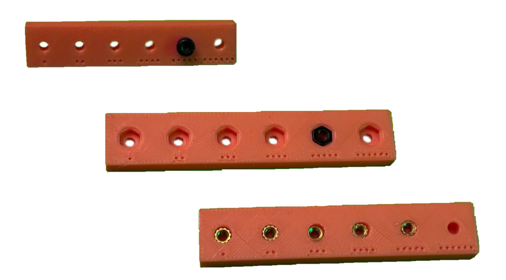
The measurement is a bolt and a fingertip. There is no caliper anywhere in this loop. Gauge The question What “right” feels like Bolt clearance Which is the first it slides through freely? Drops through under its own weight, or slides with a fingertip and no twisting. Test it vertical so gravity tells you something. Nut trap Which is the first that seats fully without forcing? Goes in with firm thumb pressure, sits flush, and does not spin once seated. If you need pliers, it is too tight. Insert pocket Which is the first that goes in square without bulging the wall? Enters square, stops flush, no swelling or cracking, and will not spin when you nip a bolt up in it. The insert gauge runs the other wayMore notches means a tighter pocket, because a heat-set pocket has to be smaller than the knurl for the melted plastic to grip it. Its six stations are your own configured knurl stepped down by 4.3% to 15.2% — a proportion rather than a fixed set of millimeters, because an insert is set by melting a volume, and six fixed tenths would bracket the answer on an M3 and measure nothing at all on an M12.
This gauge also destroys itself as you use it, so do it last and work in order.
-
Click the station that fitted
That is the whole of the measurement. Go back to the Gauges section and press the station button whose number matches the one the hardware went into. There is nothing to type and no millimeters to work out — the panel sends the station, and the figure that becomes your measurement comes from the code that built the thing you printed rather than from anything on screen.
Try it here. These are the real stations off an M3 bolt-clearance gauge:
M3 bolt clearance — which is the first the bolt slides through freely?
Pick the station your bolt first slid through freely.In the app, the click saves a new profile revision, the status line confirms it, the materials table updates, and your model rebuilds behind the sheet — so closing it shows you a part that is already the right size. Nothing is ever overwritten: a re-measurement that turns out worse is a roll-back, and history only grows.
When the answer is awkward
What happened What to do Nothing fits at any station Do not pick the closest. Something upstream is off — usually over- or under-extrusion, or hardware that is not what the Hardware section says. Check the nut or insert with calipers first. Everything fits from station 1 Your printer is already accurate for that feature, or you read “freely” too loosely. Click station 1; the status line will tell you that you landed on the end. You landed on the first or last station The sheet says so: recorded — that was an end station, so the true fit may be off the strip. It is still the best answer you have; treat the first real part as a test. Two stations feel the same Take the looser one. A slightly loose bolt hole is a working part; a slightly tight one is a part you drill out. You clicked the wrong one Nothing is lost. Use the roll-back chips in Profile, below. -
A second material, if you want one
Back in Profile, type the material into the small box at the bottom of the panel and press inherit PLA. It borrows the reference material's readings and is labeled inherited, unverified from that moment on.
To correct it properly you reprint just the bolt-clearance gauge in the new material, find the station that fits, and put the difference between the two into the
δ mmbox on that material's row — then press check. One number, applied to every borrowed reading:PLA fitted at 3.20 -> delta +0.20 PETG fitted at 3.25 -> delta +0.25 correction: +0.05Image goes here images/calibration-materials.png · 1400 × 300 The materials table with three rows in the three states — PLA measured, PETG inherited with a δ box and a check chip, and a third inherited but unchecked.The mark at the start of each row is the whole story:
Mark Row reads Means ● measured Its own gauges, printed in this material. ◐ inherited from PLA + check δ +0.04mm Another material's gauges plus one correction you printed for. ○ inherited, unverified Another material's gauges, untouched. An inherited number is never presented as a measured one — not in this table, not in the export report. Inheritance is also one hop only: a material that inherits from a material that inherits is refused, because two stacked approximations were each only ever justified on their own.
-
Undoing a reading
The bottom row of the Profile panel is a line of chips —
r1r2r3… — one per revision, most recent last. Click one and the profile goes back to what it held then.A roll-back is a new revision holding old contents rather than a deletion, so history only grows and you can always roll forward again. No model is touched by any of this; the next build simply asks a profile that now answers differently.
There is nothing wrong with a model whose gauges have not been printed yet. With no profile selected you are simply editing, and nominal is the right answer with no warning. With a profile selected but no gauge for a particular fit, you get the nominal number and a warning naming the gauge to print.
Seeing that it worked
The last section of the sheet, Compensation in this build, lists what the model currently open actually got — every dimension the profile moved, and where that number came from. It is the same information the export report carries, available before you commit to a file.
Parts that fit
Export and print
Where intent finally becomes millimeters. File ▸ Export, or Ctrl/Cmd + E.
Picking a format
Pick a format, choose where the file goes, and Slipfit shows you what it wrote:
| Format | Carries | Reach for it when |
|---|---|---|
| 3MF — project Ctrl/Cmd + E |
Geometry, plus the print settings your features asked for — solid infill under an insert, five perimeters round a nut trap, a support blocker in a bridged hole. | Always, unless your slicer refuses it. This is the one the whole export is designed around. |
| 3MF — plain | Geometry only, in the same container. | Your slicer loaded the project file as three separate objects instead of one. See the warning below. |
| STL — binary | Geometry only, in a format with nowhere to put anything else. | Something downstream only speaks STL. |
| STEP | The B-rep itself — no mesh at all — as designed, uncompensated. More, below. | Sending the design to a machinist, to Fusion or FreeCAD, or to anyone who is not this printer. |
3MF and STL both come out the right size for your printer. The fit corrections are baked into the mesh by re-running your model with the profile bound, before anything is turned into triangles — so choosing plain or STL costs you two print settings you can set by hand, and none of the calibration.
STEP is the one exception, and on purpose. It carries no mesh to compensate and no printer to compensate for — it is written nominal, whatever showing is set to, because a 3.2mm hole baked in for one printer is simply wrong by a documented amount for everyone else who opens the file.
It exports what you are looking at
Two things decide what lands in the file, and both are already on screen. The text in
the editor is what gets exported — not the last successful build — so what you can see
is what gets written. And the showing control decides the numbers: export with
it on nominal and you get the millimeters you typed; export with a printer selected
and you get that printer's — for 3MF and STL. A STEP ignores showing entirely;
more below.
An export made while showing says nominal is an uncompensated
part. It is a perfectly good file — it is simply the one you would have got from any other CAD
program. The report says profile nominal at the top and tells you nothing was
applied.
The report
A report opens over the viewport every time you export, and it is worth reading rather than dismissing. It is the only place that tells you the file is not the millimeters you typed, where each changed number came from, and what your slicer is being told:
That one is a clean report: everything it needed had been gauged, so there is nothing under Worth knowing. When there is, it reads like this — plain sentences, each naming what it could not answer confidently and what it did instead:
⚠ nothing in Kobra S1 · 0.4mm has gauged bolt_clearance.close
— print that gauge, or accept M3 clear at nominal.
⚠ PETG is inherited from PLA, unverified — this number was
measured in PLA.measured, rev 7, or inherited from PLA. An inherited number is never shown
as a measured one.
print settingsthe extra instructions riding along in the file, and which feature asked for
each.
checksadvisory. A part too big for the bed is reported and still written.
warningsanything the profile could not answer confidently — a fit with no gauge, a feature not
printed vertically, a borrowed material.
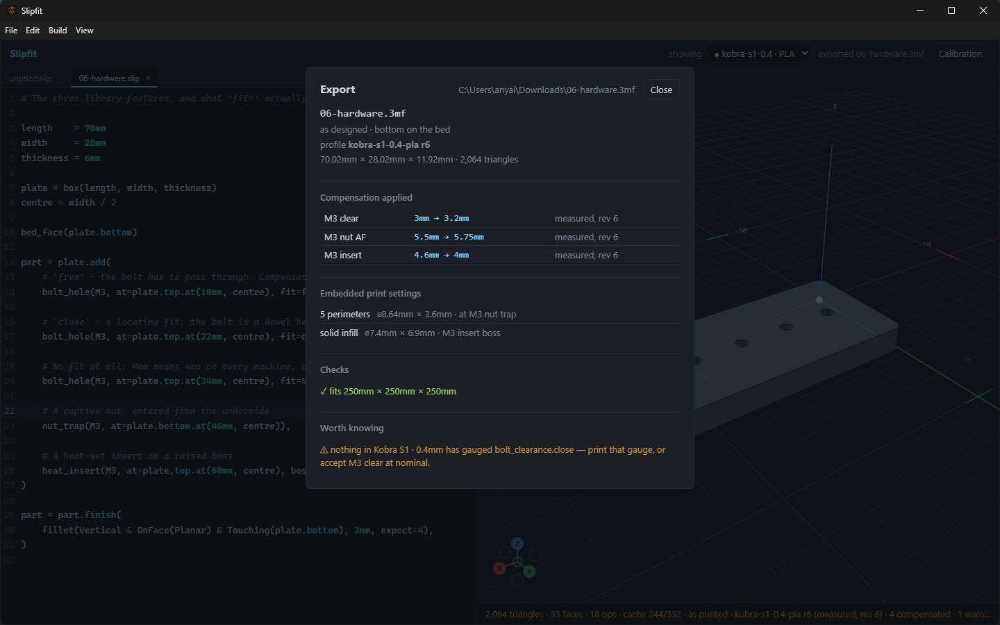
Every line of that is assembled from what the export actually did, not worked out again afterwards. A report built by asking the profile the same questions a second time could disagree with the file on disk — and the report is precisely the thing you would trust over the file.
Those compensation lines are the gauges doing their job: the file says M3, the
export says 3.2mm, and the difference came off a print you held in your hand.
Exporting re-runs your file with the profile bound, rather than stretching the finished shape afterwards. That is why a nut trap can gain a lead-in chamfer that exists only because your printer sags on bridges — nothing that worked on the mesh could add one.
Two ways to lay several bodies out
Every export now carries a layout line beside the profile, because several bodies can go on a plate two different ways and they are not interchangeable files:
| Layout | Writes | Reach for it when |
|---|---|---|
| arranged for printing | Each body turned onto its own bed_face(), spaced apart on a grid with
12mm of clear air between bodies. |
Always, for 3MF and STL — it is the default, because those two go to a slicer. |
| assembled — every body where the model put it | Exactly the coordinates your file built, bodies overlapping if that is what you wrote. | Checking the assembly itself, a print-in-place mechanism, and every STEP — a design file has no bed to lay a plate on. |
A body moves as little as either mode allows. One already lying on its bed face
is written exactly where you put it, so a model with a single body and one .bottom
declared — every example on this page until now — exports byte-identical to what it always did.
A body only moves when there is a reason: turning one onto its bed face can drop it below the
plate, so it is set back down; and bodies have to be spaced apart or they print inside each
other. There is no packer — the grid is equal cells, not the tightest fit, because your slicer's
own auto-arrange already does that and knows about your plate's exclusion zones, which Slipfit
does not.
Each body's own build direction — its own bed_face() — is what arranged
turns it onto. Declaring one on more than one body is fine; declaring two on the same body,
or none at all for a body you exported, is refused rather than guessed at, because a body only
prints one way up:
SlipError: lid has two bed faces: top and bottom
= a body prints one way up. Remove one of the two bed_face()
calls — lid.slip:2 and lid.slip:3Design-for-print checks
Three checks run automatically on every export, on the compensated solid at each body's own build direction — so a lid printed face-down and a base printed on its side are each checked against the direction they actually print in, not against the file's. Every threshold comes off the profile rather than being invented here:
| Check | Flags | Threshold, and where it comes from |
|---|---|---|
| overhang | A downward surface leaning past the angle the next layer can be printed onto. | atan(½ × extrusion width ÷ layer height) — derived, not guessed. On a
0.4mm nozzle at your calibrated layer band this comes out to exactly 45°, the number every
FDM user already carries. |
| bridge | A flat ceiling spanning further unsupported than your printer's fan and cooling can hold. | A field on the profile with a shipped default — bridging cannot be derived from the nozzle the way the other two can. |
| wall | Material between two faces that face each other — the wall of a nut trap, the gap across a slot — thinner than two perimeters. | 2 × extrusion width. |
All three are advisory, never blocking — a finding is a row beside a file that
was written anyway, not a refusal to write it. Your own .slip can add a fourth kind
of row, in the same dimensioned language as everything else:
assert length - insert >= 8mm
An assert still raises and stops the build if it fails — that has not changed, and
will not, because turning off the one keyword whose whole meaning is stop would be
exactly the wrong-but-confident outcome this page keeps warning about. What is new is that it is
captured on the report either way, marked as yours:
✓ overhang 44.3deg ≤ 45deg lead-in chamfer 0.4mm bracket.slip:30
✓ bridge nothing past 30mm
✗ wall 0.4mm < 0.8mm tray floor to DIN 934 M3 pocket showcase.slip:91
✓ fits 220mm × 220mm × 250mm (arranged)
✓ assert length - insert >= 8mm (yours)Thin-wall checking is opposing faces only — two surfaces facing each other
across material, which is the wall of a nut trap or the gap across a hole. A tapering or curved
thin region between faces that never face each other is not found, and a clean row says exactly
that: nothing under 0.8mm, not a claimed minimum. The overhang angle is sampled
once per face at its center, so a fillet blending a wall into a ceiling — which passes through
90° by construction — is not flagged the way a flat ceiling of the same size would be.
What rides along in the 3MF
Features declare print settings your slicer would otherwise have to guess at:
| Setting | Asked for by | Because |
|---|---|---|
| Solid infill | heat_insert |
The insert spins out under torque otherwise. |
| 5 perimeters | nut_trap |
The trap wall is the part that fails. |
| Support blocker | bolt_hole, when bridged |
The sag is expected; support inside a bore has to be drilled out. |
Open the 3MF and confirm that the part loads as one object with extra volumes, not as three separate parts — and that the nut trap area shows 5 perimeters and the insert boss shows solid infill in the preview.
If the extras arrive as loose objects, your slicer is misreading them and every pocket they cover will be filled in solid. The symptom reads as “the features never got exported” — they did, and were then plugged. Use 3MF — plain, which writes no extra volumes at all. The compensated geometry is baked into the mesh either way.
STL
Offered, with the loss stated: an STL has nowhere to put print settings or metadata. The compensation is not lost — that is in the geometry — so an STL from Slipfit is still the right size for your printer. The report says how many settings were discarded.
Every mesh Slipfit writes — STL or either 3MF — is built at 0.02mm accuracy, five times finer than the smallest correction the gauges can resolve. A coarser one would undo the compensation: at 0.1mm, a ⌀3.20 hole comes out as a polygon whose inside measurement is ⌀3.0 — exactly the correction the gauge was printed to measure.
STEP — the one export that is not a mesh
Every other format goes to a slicer, so every other format is written as printed
— re-evaluated with the printer bound, holes grown by whatever that machine shrinks them by. A
STEP goes somewhere else entirely: to a machinist, into Fusion or FreeCAD, to somebody checking
the design who does not have Slipfit. Compensation is one printer's error in one material, and
baking a 3.2mm hole into an interchange file would hand everyone who is not that printer a part
wrong by a documented amount. So export_step applies none, and says so on the report
rather than dropping the profile silently:
That flag is deliberate rather than an omission: nothing was compensated and nothing could be compensated here are different sentences, and a report that printed the first while a printer was plainly bound in the window would be the report contradicting what you are looking at.
The report also counts faces rather than triangles, because faces are what the
format was chosen to keep — the whole B-rep survives the round trip, not a tessellation of it.
Each body is written with a name in the file's own PRODUCT record, which is what
lets use_step(path, "lid") pick a body back out of a file Slipfit
itself wrote. Units are always explicit millimeters, whatever unit a reader might otherwise
assume.
Annotated view — a picture, not a mesh
File ▸ Export ▸ Annotated view (PNG)…, behind a separator from the geometry formats above it, because it is not one of them. Every export above writes the B-rep your file built — compensated or not, as designed or as printed. This one writes a photograph of the canvas: whatever is on screen right now, including any pins you placed with Measure, at exactly the size the viewport is.
That is the whole difference from everything above it, and the point of it: run it again a minute later, after dragging a pin or turning the model, and you get a different file. Nothing is rebuilt to make it — the selected pin and whatever face the cursor is hovering are cleared first, so neither lands in the picture, and then the screen is what gets saved.
Export › Annotated view (PNG)
✓ wrote bracket-view.png 1400 × 900This is the file that answers "will this fit" for somebody who is not going to print it and does not have Slipfit — a client signing off a bracket, a shop quoting a job. Nothing here is compensated for a printer; it is exactly what Measure put on screen, nominal or as-printed depending on what showing was set to.
Reading your model
The inspector
Click a face and find out why it is there — not merely what touched it last.
▸ chamfer(0.6mm) bracket.slip:46 created
fillet(2mm) bracket.slip:45 applied to
heat-set insert M3 bracket.slip:39 applied to
box(60, 30, 6mm) bracket.slip:23 applied toEvery entry says how it relates to the face, so nothing is implied that is not true:
| Relation | Means |
|---|---|
created |
This step made the surface — a shape's own face, or a fillet. |
modified |
It changed from a face that was already there. |
applied to |
What the step above it was applied to. |
recovered |
Worked out through a fallback. A clean chain never shows this. |
Hardware features collapse to what their author declared, rather than showing you five layers of library code — and the bit that made the face you clicked is marked, so the block answers which part of the nut trap this flat is:
▸ nut trap M3 bracket.slip:36
▸ bolt clearance ⌀3mm
hex pocket AF 5.5mm
lead-in chamfer 0.4mm
depth 2.6mm (nut 2.4mm +0.2mm)A face with two equally valid creators — where combining two shapes merged two flat surfaces into one — ends the chain showing both, ordered by line number, rather than picking one of two true answers.
Clicking works both ways
| Do this | See that |
|---|---|
| Click a face | The lines that produced it light up in the editor. |
| Move the cursor onto a line | Every face that line produced lights up in the viewport. |
| ↑ ↓ | Step through the chain; each entry lights its own lines and faces. |
Three colors, three claims: selected (the face you clicked), lit (what the current line or entry produced), and failing (what an operation choked on).
Nominal ↔ as-printed
The showing control in the title bar is the same thing as the toggle at the top of this page:
showing [nominal ▾] hole 3.00mm
showing [● kobra-s1-0.4 · PLA ▾] hole 3.20mm as printedIt is a rebuild with a profile bound, not a re-coloring of what is already on screen. Everything whose inputs did not move comes back instantly from cache, so the second version is cheap. The footer always says which of the two you are looking at.
Reading your model
Section view and measuring
Two ways of looking, for the question a shelled part always raises: what does the inside actually look like, how big is it really, and how do you put those numbers in front of somebody who does not have Slipfit?
Section — S
Cuts a clipping plane through the part so you can see inside it, without changing the model or rebuilding anything. It is a way of looking, in the same family as X-ray and the anchor toggle — not in the file, not part of the build, and free to drag.
The cut face is capped, and that is what makes it worth having: a clipped solid with no cap is a shell with a hole in it, and you would be staring through into the inside of the far wall instead of seeing the material the plane just passed through.
| Control | Does |
|---|---|
| S, or View ▸ Section | Toggle the plane on and off. |
| View ▸ Section axis — X / Y / Z | Which way the plane faces. |
| Flip which half is kept | Swap which side of the plane you are looking at. |
The plane only ever cuts your part — the bed, the grid, the anchors and the ghost of an unconsumed result are left alone, so a section reads as a section rather than as something wrong with the renderer.
Measure — M
Pick faces and get exact numbers pinned onto the part, off the real surfaces rather than the mesh drawn on screen — a ⌀8 bore reads 8.000mm, not the 7.98 a triangle mesh at viewport resolution would give. That is the whole reason a pin is a round trip to the worker instead of an instant on-screen readout: a click can afford to wait a beat for an exact answer, and a drag — which is what the section plane is — cannot.
M, or View ▸ Measure, turns the mode on rather than taking one measurement — it carries a checkmark, the same way X-ray and Section do, and stays on until you turn it off again. A part worth explaining to somebody else usually needs six or eight numbers on it at once, not one, so placing a pin re-arms the mode instead of ending it.
| You do | You get |
|---|---|
| Pick two faces | A pin on the distance between the nearest points, with a line drawn over the part connecting them, so a surprising number has a witness rather than nothing to check it against. |
| Pick two planar faces | The angle too — parallel is what two faces of a wall report, which reads
the distance as a thickness rather than an arbitrary gap. |
| Pick one face, then Enter | A single pin on its own size — ⌀ on a bore, R on a fillet. A flat face has neither and refuses rather than pinning a zero. |
M measure mode on — checkmark on the View menu
click the bore's wall
Enter ⌀6mm pinned
click the plate's top
click the plate's bottom
8mm pinned, parallel — still in measure modeA face can point back at its own axis two ways, and where that is genuinely unclear the pin reads ⌀ rather than R. A fillet mislabeled ⌀ is a misprint a shop will catch by eye; a bore mislabeled R is a part machined to half the size it needs — the two mistakes are not equally bad, so the tie-break favors the one that is merely embarrassing.
Moving a pin, and losing one on purpose
Click a pin to select it. ↑ ↓ ← → nudge it, dragging moves it by hand, and Delete removes it. Esc drops the selection before it does anything else.
A label only slides square to what it measures — further out, or sideways along the part — never at some stray in-between angle where it would stop reading as a straight dimension line. That is a smaller freedom than a free drag, on purpose: a number standing off at 37° reads as a mistake, not as a placement choice.
Every pin is re-checked against the model on every rebuild, not merely redrawn. Edit the hole a pin sits on and its number moves with it; delete the feature it was measuring and the pin goes rather than pointing at nothing, with the status line saying how many were dropped. A pin is never restored across a rebuild — it is re-resolved, so what is on screen is either correct or gone, and never a leftover guess.
Pick a named frame instead of a face and it measures as a vertex at its origin — an anchor is a declared point rather than geometry, and "how far is this surface from that frame" is the honest reading of the question a pick on one raises.
There is no sheet, no paper size, no title block and no second view — one viewport with pins
on it, exported as one picture. Pins live for the session, the same as X-ray and Section:
closing the file drops them, and none of it is written into the .slip. When a
dimensioned view needs to leave the window, export it as a picture.
Going further
Eight worked examples
From two lines to a vented enclosure lid. Every one of these was built before it was written down — the figures underneath each are what it actually produces.
All eight are in the repository under examples/tour/, so you can open them rather than retype
them.
A plate with a hole
Set part, make a shape, take something away.
# A rectangular plate with one hole through it.
part = box(40mm, 20mm, 3mm).cut(
hole(5mm, 3mm, at=(20mm, 10mm, 3mm))
)A parametric spacer
Named numbers, arithmetic between them, and an anchor used as a position.
# A parametric spacer. Change one number, the rest follows.
bore = 5mm
wall = 2mm
height = 12mm
outer = bore + wall * 2
blank = cylinder(outer, height)
part = blank.cut(hole(bore, height, at=blank.top))Placing by anchor
Positions measured across a face, and a named anchor of your own.
# Placing holes by anchor rather than by coordinate.
length = 60mm
width = 30mm
thickness = 6mm
plate = box(length, width, thickness)
part = plate
part = part.cut(hole(4mm, thickness, at=plate.top.at(10mm, width / 2)))
part = part.cut(hole(4mm, thickness, at=plate.top.at(50mm, width / 2)))
# A named anchor, so a later feature has somewhere to refer to.
part = part.with_anchor("center", plate.top.at(length / 2, width / 2))
part = part.cut(hole(8mm, 3mm, at=part.center))Rounding the right edges
Why OnFace(Planar) is in there, and why the chamfer expects eight.
# Selection and the finishing pass.
plate = box(50mm, 25mm, 5mm)
part = plate.cut(hole(6mm, 5mm, at=plate.top.at(25mm, 12.5mm)))
# `OnFace(Planar)` keeps the bore's vertical seam edge out of the selection.
# Without it this matches 5 edges, not 4 — and `expect=` says so.
part = part.finish(
fillet(Vertical & OnFace(Planar) & Touching(plate.bottom), 3mm, expect=4),
# The fillet above ran first, so the rim is now 4 straights + 4 arcs.
chamfer(TopRim, 0.8mm, expect=8),
)A vented plate
A recipe that hands back a list of positions, and two loops placing 18 holes.
# Loops and functions: a vented plate whose hole field re-centers itself.
width = 70mm
depth = 45mm
thickness = 3mm
margin = 8mm
vent = 5mm
pitch = 10mm
def spread(span, margin, pitch):
"""Offsets across `span`, inset by `margin`, centered on what is left over."""
usable = span - margin * 2
count = int(usable / pitch) + 1 # Length / Length is a float
start = margin + (usable - pitch * (count - 1)) / 2
return [start + pitch * i for i in range(count)]
plate = box(width, depth, thickness)
bed_face(plate.bottom)
part = plate
for u in spread(width, margin, pitch):
for v in spread(depth, margin, pitch):
part = part.cut(hole(vent, thickness, at=plate.top.at(u, v)))
part = part.finish(chamfer(TopRim, 0.6mm, expect=4))for u in spread(…) means “do the indented lines once for each number in that
list, calling it u each time”. One loop inside another visits every
combination — 6 across times 3 down is 18 holes, from four lines. Make the plate bigger and the
count changes on its own, because spread() works it out rather than being told. That
is the moment code stops being the harder option.
All three features, and what fit= decides
The same plate, five different declarations of what goes in each hole.
# The three library features, and what `fit=` actually decides.
length = 70mm
width = 28mm
thickness = 6mm
plate = box(length, width, thickness)
center = width / 2
bed_face(plate.bottom)
part = plate.add(
# `free` — the bolt has to pass through. Compensated from the clearance gauge.
bolt_hole(M3, at=plate.top.at(10mm, center), fit=free),
# `close` — a locating fit; the bolt is a dowel here, not a fastener.
bolt_hole(M3, at=plate.top.at(22mm, center), fit=close),
# No fit at all: 4mm means 4mm on every machine, on every printer.
bolt_hole(M3, at=plate.top.at(34mm, center), fit=None, depth=4mm),
# A captive nut, entered from the underside.
nut_trap(M3, at=plate.bottom.at(46mm, center)),
# A heat-set insert on a raised boss.
heat_insert(M3, at=plate.top.at(60mm, center), boss=True),
)
part = part.finish(
fillet(Vertical & OnFace(Planar) & Touching(plate.bottom), 2mm, expect=4),
)
Only the free fit has a gauge in the shipped set. Select a printer and the
close hole comes out nominal with a warning naming the gauge to print — which is
the honest answer, not an error.
A vented enclosure lid
A recipe, some trigonometry, a honeycomb fused into one cutter, four heat inserts, and a description that has to work around 184 candidate edges.
# A vented enclosure lid: functions, trigonometry, a honeycomb, hardware.
#
# Everything below is derived from the eight numbers at the top. Change
# `inner_x` and the lip, the vent field and the four bosses all follow.
# ----------------------------------------------------------------- the box
inner_x = 84mm
inner_y = 58mm
wall = 2.4mm
deck = 3mm
# ------------------------------------------------------------------ the lip
lip_h = 5mm
lip_t = 1.6mm
lip_gap = 0.2mm # clearance so the lid actually drops in
# ---------------------------------------------------------------- the vents
vent_af = 5mm # hexagon, across the flats
vent_web = 1.8mm # plastic left between neighbors
field_x = 40mm
field_y = 26mm
outer_x = inner_x + wall * 2
outer_y = inner_y + wall * 2
def honeycomb(width, height, across_flats, web):
"""Centers of a hex field that fits inside `width` x `height`.
Rows are spaced by √3/2 of the pitch and every other one is shifted half a
pitch across — which is what makes the cells nest instead of stack.
"""
pitch = across_flats + web
row = pitch * (sqrt(3) / 2)
cells = []
for j in range(int(height / row) + 1):
shift = pitch / 2 if j % 2 else 0mm
for i in range(int(width / pitch) + 1):
u = pitch * i + shift
v = row * j
if u <= width and v <= height:
cells.append((u, v))
return cells
deck_plate = box(outer_x, outer_y, deck, label="lid deck")
bed_face(deck_plate.bottom)
part = deck_plate
# ---- the lip, as a rectangular ring standing on the deck -----------------
skirt = box(
inner_x - lip_gap * 2, inner_y - lip_gap * 2, lip_h,
at=(wall + lip_gap, wall + lip_gap, deck),
)
bore = box(
inner_x - lip_gap * 2 - lip_t * 2, inner_y - lip_gap * 2 - lip_t * 2, lip_h,
at=(wall + lip_gap + lip_t, wall + lip_gap + lip_t, deck),
)
part = part.fuse(skirt.cut(bore))
# ---- the honeycomb, cut as one tool rather than forty --------------------
# Fusing the cutters first turns forty booleans against the part into one.
cells = honeycomb(field_x, field_y, vent_af, vent_web)
u0 = (outer_x - field_x) / 2
v0 = (outer_y - field_y) / 2
cutter = None
for u, v in cells:
cell = hex_prism(
vent_af, deck,
at=deck_plate.top.at(u0 + u, v0 + v),
axis=(0, 0, -1), # aimed down, into the deck
)
cutter = cell if cutter is None else cutter.fuse(cell)
part = part.cut(cutter)
# ---- four bosses with heat-set inserts -----------------------------------
inset = 7mm
part = part.add(*[
heat_insert(M3, at=deck_plate.top.at(u, v), boss=True)
for u in (inset, outer_x - inset)
for v in (inset, outer_y - inset)
])
# ---- finishing, over the completed solid ---------------------------------
# `Touching(bottom)` alone would match 184 edges here — every honeycomb cell
# has six vertical edges reaching the underside. The two outer side planes
# name the four corners and nothing else.
outer_corners = Vertical & (OnFace(deck_plate.left) | OnFace(deck_plate.right))
part = part.finish(
fillet(outer_corners, 3mm, expect=4),
chamfer(BottomRim, 0.6mm),
)The description at the bottom. On a plain plate, “the four corner edges” is
Vertical & Touching(bottom). Once there is a honeycomb in the part that same
phrase matches 184 edges, because every hexagon has six vertical edges reaching the underside.
Naming the two outer side planes instead stays precise no matter what else the part grows —
and expect=4 is what would have told you the first version was wrong.
A part built from another file
A library with no part of its own, included and placed four times.
# parts/standoff.slip — a library, not a part.
edge_margin = 6mm
def standoff(height=10mm, outer=9mm, bore=3.2mm):
pillar = cylinder(outer, height)
drilled = pillar.cut(hole(bore, height, at=pillar.top.at(0mm, 0mm)))
return drilled.with_anchor("seat", pillar.bottom)
# 08-composed.slip — the model that uses it.
plate_x = 70mm
plate_y = 50mm
thickness = 5mm
height = 12mm
parts = use("./parts/standoff.slip")
plate = box(plate_x, plate_y, thickness)
bed_face(plate.bottom)
# The four corners, inset by the margin the library recommends.
inset = parts.edge_margin
corners = [
(inset, inset),
(plate_x - inset, inset),
(inset, plate_y - inset),
(plate_x - inset, plate_y - inset),
]
part = plate
for x, y in corners:
pillar = parts.standoff(height=height).placed(
"seat", onto=plate.top.at(x, y)
)
part = part.fuse(pillar)
part = part.finish(
chamfer(BottomRim, 0.6mm),
)That the standoff is not in this file. Correct its bore once and every model that includes it
is corrected — which is the difference between a library and four copies you will edit three of.
The seat anchor is what makes it placeable: mating it onto
plate.top.at(x, y) stands the pillar on the plate without anyone working out a
height.
Going further
When it goes wrong
Real messages, with the fix. Slipfit points at the text you wrote, not at the code underneath it.
Errors appear twice on purpose — underlined in the editor, and spelled out in a panel beneath it. The underline disappears on your first keystroke, because an error belongs to the text that produced it.
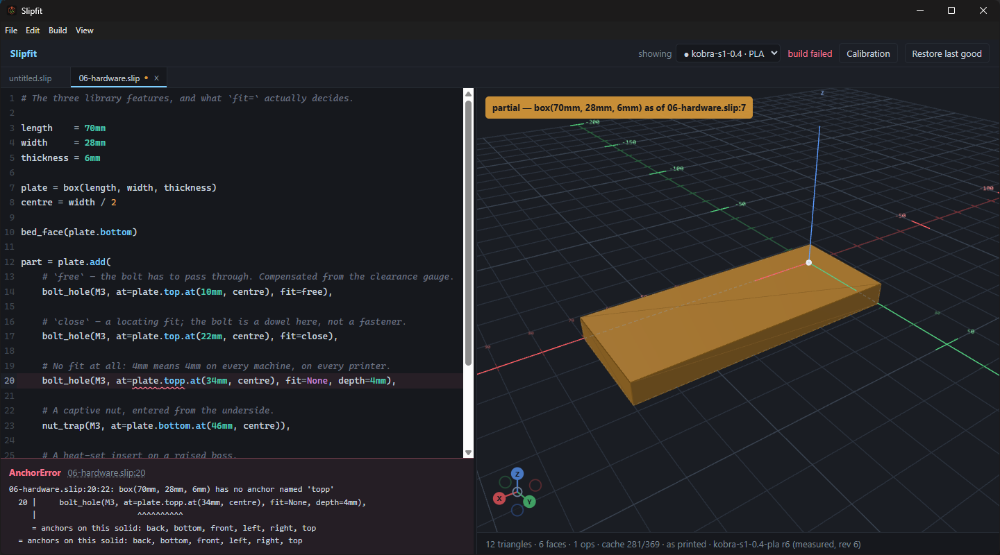
Units and arithmetic
model.slip:1:8: expected Length, got Scalar for box() z
1 | part = box(40mm, 20mm, 3)
| ^^^^^^^^^^^^^^^^^^
= did you mean 3mm?model.slip:1:5: cannot add Length and Scalar
1 | w = 10mm + 5
| ^^^^^^^^model.slip:1:12: a unit suffix must be attached to its number, not '40' 'mm'
1 | part = box(40 mm, 20mm, 3mm)
| ^^^^^
= write 40mmmodel.slip:1:12: cannot subtract Length from Scalar
1 | part = box(3-1/2in, 20mm, 3mm)
| ^^^^^^^
= mixed numbers are not supported — they collide with subtraction; write 3.5in or 7/2inmodel.slip:1:8: expected Angle, got Scalar for hex_prism() rotation
1 | part = hex_prism(5.5mm, 3mm, rotation=30)
| ^^^^^^^^^^^^^^^^^^^^^^^^^^^^^^^^^^
= did you mean 30deg?Anchors and selection
model.slip:2:30: box(40mm, 20mm, 3mm) has no anchor named 'topp'
2 | part = p.cut(hole(3mm,3mm,at=p.topp.at(5mm,5mm)))
| ^^^^^^
= anchors on this solid: back, bottom, front, left, right, topmodel.slip:2:24: Vertical & Planar can never match anything
2 | part = p.finish(fillet(Vertical & Planar, 1mm))
| ^^^^^^^^^^^^^^^^^
= Vertical applies to edge, Planar to facemodel.slip:2:8: expected 3 edges, matched 4
2 | part = p.finish(fillet(Vertical, 1mm, expect=3))
| ^^^^^^^^^^^^^^^^^^^^^^^^^^^^^^^^^^^^^^^^^
= selector was VerticalFits and features
model.slip:2:8: M3 clearance hole at top(80.00, 10.00, 3.00) removed no material
2 | part = p.add(bolt_hole(M3, at=p.top.at(80mm, 10mm), fit=free))
| ^^^^^^^^^^^^^^^^^^^^^^^^^^^^^^^^^^^^^^^^^^^^^^^^^^^^^^^
= the position is off the part, or the feature sits entirely outside it — check the anchor and the offsetspress fit collapsed rib at -0.05mm
= the offset left nothing behind, so rib has a feature thinner
than 0.1mm; reduce the press fit gap in Config > Hardware > Fitsno such fit 'snug'; use free, close, press or noneSymptoms with no error message
| What you see | What it usually is |
|---|---|
| Nothing appears in the viewport, and no error | The file never set part. That is the one name Slipfit looks for. |
A ghosted shape and an amber 1 unused result badge |
A line that built something and threw it away — you wrote part.cut(…) where you meant
part = part.cut(…).
|
| A cut removed nothing | You used cylinder() where you wanted hole(). A cylinder built on a top
face runs upwards, into thin air. |
| A hole came out in mid-air off the side of the part | A side-face anchor. left, right, front and
back measure their second number across the part's thickness.
|
| Two of your own parts will not go together | The pocket is exactly the size of the thing going into it. Give the cut a
fit=. |
| The part is amber and hatched | The build failed partway and you are looking at an intermediate. Read the badge; do not export it. |
The export report says profile nominal |
The showing control was on nominal. Select your printer and export
again — nothing was compensated. |
Export says not exported — this file is not trusted |
Exporting runs the model, so it is gated exactly as building is. Trust the file first. |
Export fails with has no entry for <material> |
That profile has no gauges recorded for that material yet. Record a reading, inherit another
material, or export on nominal. |
| The exported part loads as three separate objects | Your slicer is not reading the project 3MF. Use 3MF — plain; the geometry is identical and still compensated. |
| The window is stuck building | Ctrl/Cmd + . cancels. An endless loop in a model cannot be interrupted from inside it, which is why models run in a separate process. |
| You have edited your way into a mess | Build ▸ Restore last good build. The last text that built cleanly is kept on disk, so it survives closing the app. |
Going further
Reference
Every name a .slip starts with, before you import anything.
Building shapes
box(x, y, z, *, at=None, label=None)
cylinder(diameter, height, *, at=None, axis=(0,0,1), label=None)
cone(diameter, top_diameter, height, *, at=None, axis=(0,0,1), label=None)
hex_prism(across_flats, height, *, at=None, axis=(0,0,1), rotation=None, label=None)
hole(diameter, depth, *, at=None, axis=None, label=None)
profile(on=anchor_or_position, *, label=None)
text(string, height, *, on, align="left", spacing=0mm, font=None) # a profile source, see LetteringDrawing and sweeping a profile
| Member | Gives |
|---|---|
.line_to(u, v, *, label="") |
A straight run to that point. |
.arc_to(u, v, *, radius, label="") |
The minor arc to that point; the sign of radius is a turn direction. |
.close(*, label="") |
Draws the closing run and returns a finished Profile. |
.extruded(height) |
A solid, pushed along the anchor's own normal. |
.revolved(angle=360deg, *, about) |
A solid, turned about an Axis. |
plate.top.u plate.top.v plate.top.axis # the three lines through an anchor's origin
plate.top.at(20mm, 0mm).u_axis # the u line, through a point on it instead
plate.top.at(20mm, 0mm).axis # the normal, through that same pointMirror and patterns
pattern(tool, *, count, spacing, along) # a row of copies, as one tool
polar_pattern(tool, *, count, about) # a ring of copies, dividing a full turn| Member | Gives |
|---|---|
.mirrored(about) |
The reflected copy — about is an anchor or a point on one.
More.
|
Working with a solid
| Member | Gives |
|---|---|
.cut(tool, fit=None) |
A new solid with the tool removed. fit= leaves air on every face — free,
close, press or none.
|
.fuse(tool) .intersect(tool) |
A new solid. All three take simplify=False. |
.add(*features) |
A new solid with hardware features applied in order. |
.finish(*blends) |
A new solid with fillets and chamfers applied in order. |
.shelled(wall, *, open, expect=None) |
A hollow solid to that wall thickness, with the faces open matches left
off. More. |
.fillet_now(pred, r) .chamfer_now(pred, d) |
Round or bevel immediately, for a half-built shape. |
.placed(anchor, onto=, spin=) |
Mate one of its anchors onto a position on another solid. |
.moved(dx, dy, dz) .rotated(angle, about=) |
Move or turn it. Anchors go with it; volume is unchanged. |
.edges(pred, expect=None) .faces(pred, expect=None) |
A selection you can count, index and loop over. |
.with_anchor(name, where) |
A new solid carrying an extra named anchor. |
.anchors .label |
What is on it, and what the inspector calls it. |
.volume .bounds .size() |
Measurements, with units on them. |
Descriptions
# edges Linear Circular Vertical Horizontal
# LongerThan(q) ShorterThan(q) Touching(t) OnOuterWire(t)
# faces Planar Cylindrical Conical SurfaceIs(name)
# FacingUp FacingDown Facing(v) Highest Lowest
# either Anything Radius(q) Diameter(q) AtHeight(q) OnFace(t)
# swept Swept FromSegment(label) # from a profile — see Profiles
# named TopFace BottomFace TopRim BottomRim
# combine a & b a | b ~a (also Not(a))Hardware and printing
bolt_hole(size, *, at, fit=free, depth=None)
nut_trap(size, *, at, clearance=…, lead_in=…, bolt=True, fit=free)
heat_insert(size, *, at, boss=False, wall=1.2mm, clearance=…)
bed_face(anchor) # which face goes on the bed
free close press # the three fits
M2 M2_5 M3 M4 M5 M6 M8 M10 M12 # threads and fastener sizes
DIN_912 ISO_7380 DIN_934 DIN_985 # standardsThreads
thread(diameter_or_size, pitch=None, *, at, depth, fit=free, external=False)
tapping_hole(size, *, at, depth, fit=None)
fit here is design clearance from Config › Hardware › Fits — the
same three words as a fitted cut() — never a printer reading.
Using another file
use(path) # run another .slip, get its names back
# relative to the file that wrote the call
use_step(path, name=None) # read a STEP file, get an ordinary Solid
# name= picks a body when the file holds severalMaths that knows about units
sin(angle) cos(angle) tan(angle) # take an Angle, give a number
asin(x) acos(x) atan(x) # take a number, give an Angle
atan2(y, x) # two of the same kind, gives an Angle
sqrt(area) # Area -> Length, Scalar -> Scalar
pi tau
Quantity(value, "mm") # what a unit literal becomesPython's own built-ins are all there, and nothing is removed. import works for anything else
in the standard library.
The deeper reference
This page is the way in. When you want the exact detail, each layer has its own document in the repository:
| Document | Covers |
|---|---|
docs/language.md |
Units, the dimension system, precision, the full error catalog. |
docs/modelling.md |
Shapes, anchors, descriptions, booleans, fitted cuts, the finishing pass, several bodies, clearance and overlap. |
docs/composition.md |
use(), path rules, placement, trust across files. |
docs/printing.md |
Hardware tables, profiles, gauges at two attitudes, compensation, the two export layouts, the design-for-print checks, the 3MF dialect. |
docs/calibration.md |
The gauge loop step by step, with print settings. |
docs/shell.md |
The window, trust, rebuilds, tabs, the editor, the viewport, section, measuring and themes. |
docs/inspector.md |
The ancestry chain, the highlight bus, the calibration panel. |
docs/worker.md |
The build process, crash recovery and partial results. |
docs/packaging.md |
How the installers are built, and where a packaged install keeps things. |